N1: Elstree and Borehamwood Station, Shenley Road, Borehamwood
H.
G. WELLS' INVISIBLE MAN: Jailbreak
(Pennington Richards: 1958)
As the train pulls into the station, Doris (Denny Dayvis)
gets out with
the stolen wallet and runs across the track as the train sets off
again. Joe Green (Dermot Walsh) chases after her.
DANGER
MAN: The Sanctuary
(Charles Frend: 1959)
An express flashes through Glen Doon station, allowing Drake to make
his escape
N2: Station Road, Borehamwood
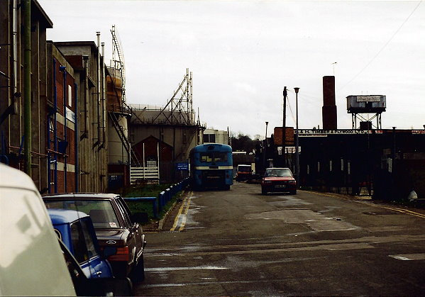
HERE
COME THE DOUBLE DECKERS!: Tiger
Takes Off (Harry Booth: 1969)
Tiger (Debbie Russ), unable to steer the
hovercraft, crashes into
Albert (Melvyn Hayes) and carries him off. Soon
Scooper (Peter Firth),
Spring (Brinsley Forde), Billie (Gillian
Bailey), Brains (Michael
Audreson), Doughnut (Douglas Simmonds)
and Sticks (Bruce Clark) catch
up with them.
N3: The Borehamwood Retail Estate, Theobald Street, Borehamwood
INSPECTOR
MORSE: Driven to
Distraction (Sandy Johnson: 1989)
Morse (John Thaw) and Lewis (Kevin
Whately) wait outside Safeway's in
Sergeant Maitland's (Mary Jo Randle) car in order
to find out how easy
it would be for their quarry to pick a victim.
N4: Shenley Road, Borehamwood
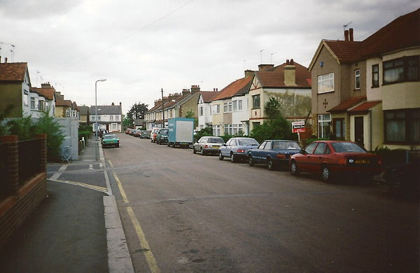
H.
G. WELLS' INVISIBLE MAN: Bank
Raid (Ralph Smart: 1958)
Brady and Sally force Williams (Brian Rawlinson)
and Crowther
(Willoughby Goddard) off Clarendon Road just as the
police arrive.
Brady puts the cash from the raid into the villains' car before taking
Sally (Deborah Watling) home.
H.
G. WELLS' INVISIBLE MAN: The
Rocket (Quentin Lawrence: 1959)
The articulated truck with the rocket on board careers down Clarendon
Road as Brady wrestles with Reitter in the cab. The truck narrowly
misses a police car and crashes into the kerb. The police leave to
arrest the rest of the gang as Brady hands Reitter to the Det.
Inspector (Robert Raglan).
THE
SAINT: The Well
Meaning Mayor (Jeremy Summers: 1963)
Hackett's Renault drives away from Templar’s hotel and approaches a road junction (driving along Cardinal Avenue towards Shenley Road) when a van starts to pull in front of him. Hackett swerves and breaks.
THE
SAINT: The Scorpion
(Roy Baker: December 1963)
”Long Harry” Garret (Philip Latham) is being chased
through London by a
thug on a motorbike. He spots a phone box and crosses the road (from
corner of Grosvenor Road). After entering the phone box he
calls Simon
Templar for help.
THE
HUMAN JUNGLE: Dual
Control (Roy Baker: ???)
Jane Falcon (Annette Andre) is foiled from jumping
the queue at a bus
stop and throws herself under a taxi when she finds herself unable to
get on a full bus (by Clarendon Road).
GIDEON’S
WAY: The State Visit
(John Moxey: August 1964)
Commander Gideon (John Gregson) and Detective Chief
Inspector David
Keen (Alexander Davion) find a television outside
broadcast van to help
them search for Max Fischer (Shenley Road seen from inside
the studios).
(Identified by Alan Field, May 2009)
DANGER
MAN: Whatever Happened
to George Foster (Don Chaffey: November 1964)
John Drake makes his escape in a stolen police car.
GIDEONS
WAY: Gang War
(Quentin
Lawrence - January/February 1965)
Henry Waldo (Frederick Bartman) and Lollo Romano (Jane
Merrow) leave the restaurant in Dean Street (The
Grosvenor Hotel) and
are seen by Cowboy (James Chase).
THE
AVENGERS: Quick-Quick
Slow Death (James Hill: October 1965)
Willi Fehr (Michael Peake) pushes his pram across
the high street.
THE
AVENGERS: Epic
(James Hill: February 1967)
Mrs.Peel (Diana Rigg) is driven (west
along Shenley Road then down
Theobald Street and east towards Cowley Hill) in Kirby's taxi.
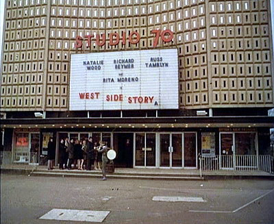
THE
AVENGERS: Something
Nasty in the Nursery (James Hill: March 1967)
Gordon (Trevor Bannister) plants a baby bouncer in
the car of Sir
George
Collins (Patrick Newell) parked in the car park at
the rear of his
apartment (Studio 70 Cinema, which stood directly in front of
the ABP
Studios before it was demolished). Once the ball is planted
he
return to his blue Mini van and a figure dressed as a nanny gets out of
the rear. Mrs Peel (Diana Rigg) arrives looking for
Sir George when
Gordon (Trevor Bannister) intervenes by trying to
run Mrs Peel down in
the Van. She escapes into the back door of the apartment block watches
as the nanny leaps into the van as it drives off. She finds Sir George
in his car behaving very strangely. After leaving the shop of J.W.
Martin and Son and Son and Son, the mysterious nanny steps into the
Mini van which drives off just as Steed arrives in his Bentley
(directly opposite the doors of the Studio 70 Cinema on Brook
Road).
THE
SAINT: When Spring is
Sprung (Jim O'Connoly: March 1967)
Peter Quentin (Harvey Ashby) posing as Simon
Templar visits a local
supermarket (between Whitehouse Avenue and Cardinal Avenue)
in the
Volvo. On the pretext of buying bread he changes places with the real
Saint who is waiting inside. Quentin has been followed by a policeman
(Brian Mosley) who does not notice the switch.
THE
SAINT: The Best Laid
Schemes (John Moxey: May 1967)
Simon Templar follows John Everett's (Fulton Mackay)
Jaguar in his
Volvo down the high street and turns left past a church into the car
park (redeveloped) where he has a meeting with
Ballard (Godffrey
Quigley).
THE
CHAMPIONS: The
Experiment (Cyril Frankel: June 1967)
The men following Sharron lose her and one (Julian Strange)
phones in
their report from a call box.
THE
CHAMPIONS: The Night
People (Robert Asher: June 1967)
Craig (Stuart Damon) foils a raid on Lloyds Bank
(189 Shenley Road)
by stealing a
villain's gun.
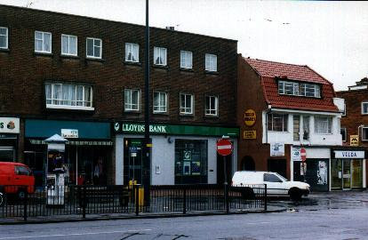
THE
PRISONER: The Girl Who
Was Death (David Tomblin: November 1967)
The secret agent (Patrick McGoohan) gets his
mission from Potter
(Christopher Benjamin), posing as a shoe black (in
shop doorway corner
of Grosvenor Road and Shenley Road) and then goes to the
Magnum Record
shop, watched by the woman in white (Justine Lord).
THE
CHAMPIONS: Autokill
(Roy Ward Baker: Early 1968)
The photographs shown to the drugged Richard depict Klein (Paul
Eddington) being 'killed' on the high street.
DEPARTMENT
S: Handicap Dead
(John Gilling: Summer 1968)
Sullivan (Joel Fabiani) watches Eddie Curtis (Neil
McCallum) leave the
post office and follows him into a cafe opposite and questions him
about the break-in and murder, until Eddie makes a run for it and is
kidnapped at the roadside.
DEPARTMENT
S: Last Train to
Redbridge (John Gilling: 1968)
Jason talks to a taxi driver about the London Underground employee he
picked up at Redbridge (back projection looking East opposite
near the
Post Office).
THE
SAINT: Where the Money
Is (Roger Moore: Summer 1968)
Simon Templar is taken by a mysterious girl in a limousine on a
nocturnal trip to a deserted film studio.
THE
SAINT: The World Beater
(Leslie Norman: Summer 1968)
Simon Templar and Kay Collingwood race along Elstree Way at the start
of the rally, seen in the back projection.
RANDALL
AND HOPKIRK [DECEASED]: A
Sentimental Journey (Leslie Norman: July 1968)
After escaping from Sam Seymour Jeff is picked up by the police in a
car which is waiting for him (on Cardinal Avenue).
The car drives up to
a junction (with Shenley Road which appears on back
projection). The
car drives along a small road (the road that runs parallel
with
Shenley Road then doubles back along the main road and past the
junction with Cardinal Avenue, at the same time the back projection for
Jeff's side of the car is several sequences of a journey from west to
east along Shenley Road). Jeff is picked up a second time by
the police
(on Clarendon Road, the back projection is of the route around
the
corner onto Shenley Road).
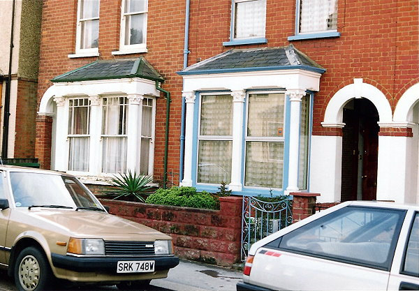
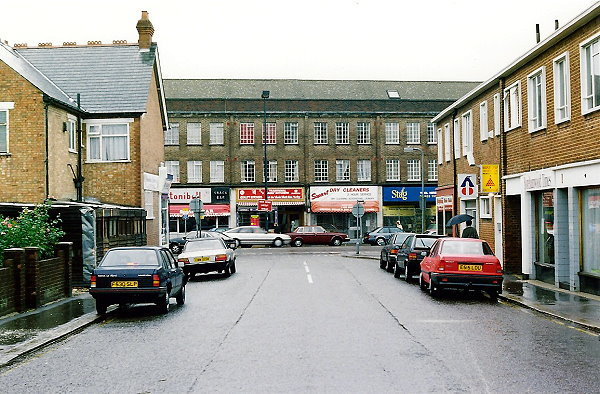
THE
AVENGERS: They Keep
Killing Steed (Robert Fuest: August 1968)
Bruno (William Ellis) drives to deliver the cases
containing face
moulds to two agents staying at addresses on Drayton Road.
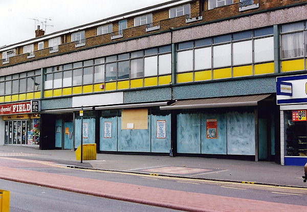
RANDALL
AND HOPKIRK [DECEASED]: It's
Supposed to be Thicker Than Water (Leslie
Norman: Autumn
1968)
Looking for Johnny Cracken Jeff talks to a contact outside Sainsbury's
supermarket (91-97 Shenley Road). He also visits a
branch of Joe
Coral's betting shop (110 Shenley Road).
JOURNEY
TO THE UNKNOWN: Do Me
A Favor and Kill Me (Gerry O'Hara: 1968)
Whilst walking through a busy street Jeff Wheeler (Joseph
Cotton) steps
into the road and is nearly hit by a speeding car that appears to have
been following him.
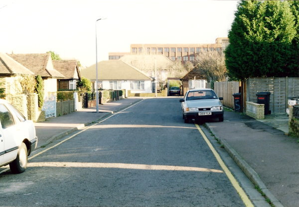
THE
AVENGERS: Love All
(Peter Sykes: November 1968)
Steed goes to a meeting with Mother under a manhole in Grosvenor Road.
DEPARTMENT
S: Les Fleurs du Mal
(Cyril Frankel: 1969)
Jason and Annabelle are staking out Vabour’s flat when they see Stacey
leave and they follow. Later Jason goes back to stake out the building
alone.
RANDALL
AND HOPKIRK [DECEASED]: Money
to Burn (Ray Austin: Early 1969)
Jeff (Mike Pratt) visits the supermarket to demand
an unpaid fee from
the manager and storms out in disgust.
HERE
COME THE DOUBLE DECKERS!: Tiger
Takes Off (Harry Booth:
1969)
The hovercraft runs down the road out of control.
HERE
COME THE DOUBLE DECKERS!: Invaders
From Space (Jeremy Summers: 1969)
The invading spacemen attempt to conquer the high street both in their
van and on foot.
HERE
COME THE DOUBLE DECKERS!: The
Pop Singer (Harry Booth: 1969)
Albert (Melvyn Hayes) hands out flyers for the Cool
Cavalier's concert
but is pursued by a policeman (Ivor Salter).
HERE
COME THE DOUBLE DECKERS!: A
Helping Hound (Jeremy Summers: 1969)
Mr. Primble (Graham Stark) arrives at Mrs Vickers' (Nora
Nicholson)
house (on Clarendon Road) to inspect it. Scooper (Peter
Firth), Spring
(Brinsley Forde), Billie (Gillian Bailey),
Brains (Michael Audreson),
Doughnut (Douglas Simmonds), Sticks (Bruce
Clark) and Tiger (Debbie
Russ) watch as Mr Primble attempts to leave in one piece.
Later Tiger
finds a stray dog on the street.
DEPARTMENT
S: A Fish Out of Water
(Cyril Frankel: April 1969)
The customs officer recognises Jason King (Peter Wyngarde)
from a
photograph in Takla’s collection (standing outside a bank
opposite the
studios). There is also a shot of Stewart Sullivan (Joel
Fabiani) by a
telephone box (probably the one by the studio main entrance).
THE
PROTECTORS: Thinkback
(Cyril Frankel: 1972)
Harry and The Contessa race through twilight streets to the film studio
where Frank Dilling is hiding. As they are in an ambulance Harry uses
the siren to clear a path through the busy streets.
THE
PROTECTORS: The Insider
(Don Leaver: 1973)
The Contessa (Nyree Dawn Porter) jumps into a taxi
in order to follow
Smith's car as he leaves the studios with the ransom money.
THE
PROFESSIONALS: Cry Wolf
(Phil Meheux: 1981)
Bodie (Lewis Collins) drives Doyle (Martin
Shaw) in his Ford to meet
with Susan Grant at the beginning of their assignment.
Films:
I THANK A FOOL (1962)
ON THE BUSES (1971)
DIGBY, THE BIGGEST DOG IN THE WORLD
(1973)
PERCY'S PROGRESS
(1974)
Television:
GHOST SQUAD: It Won’t be a Stylish Marriage
(1961)
AUF WIEDERSEHEN, PET
(1983)
ALEXEI SAYLE'S STUFF
(1989)
GRANGE HILL (1991)
N5: Associated British Elstree Studios, Shenley Road, Borehamwood (partly demolished)
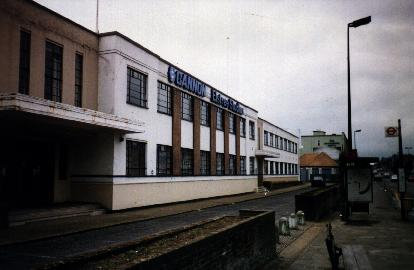
THE
SAINT: Marcia
(John Krish: 1963)
Simon Templar (Roger Moore) arrives at the National
Picture Corporation
Studios in his Volvo and enters. He returns after a few days, and then
later with actress Claire Avery (Samantha Eggar).
THE
SAINT: The Well
Meaning Mayor (Jeremy Summers: 1963)
A van pulls up by the Studio entrance, forcing a collision with
Hackett's car. Hacket (Norman Bird) and Maxin (David
Morrel) get into a
fight, until a policeman intervenes.
THE
SAINT: Staring the
Saint (James Hill: 1963)
Simon Templar (Roger Moore) arrives at the studios
in his Volvo. The
next day Inspector Teal (Wensley Pithey) arrives at
the studio in a
police Wolseley.
THE
SAINT: The Revolution
Racket (Pat Jackson: April/May 1964)
Doris Inkler (Suzanne Lloyd) leaves a restaurant
and is forced into a
cab by the Enriques Brothers (Peter Arne and Michael Godfrey),
as
Francisco (Reginald Jessup) watches.
THE
SAINT: The Man Who
Liked Toys (John Gilling: June 1964)
At the Costello and Hammel factory, Duggan (David Lodge)
holds a union
meeting by the main gate He is waiting by his bike when Enstone (John
Bascomb) and Fowler (Maurice Kaufmann)
arrive in Enston's Bentley,
followed by The Saint's Volvo. After Enstone enters the research
section, Fowler drives away followed by Duggan. Fowler returns to the
building and meets Enstone and Hammel (John Paul).
Later that night
Simon Tempter (Roger Moore) returns to the factory
in his Volvo with
Claire wheeler, climbs over the gate and enters the building. Claire
drives off in the Volvo as Costello (Inigo Jackson)
and Hanimel arrive
at the factory in a Rover and enter the building Hammil later returns
from the building armed with a gun, shooting at the pursuing Templar
until he runs out of bullets. He and Templar then fight until Inspector
Teal (Ivor Dean) and Claire (Rosemary
Reede) arrive with a squad of
policemen
THE
SAINT: The Hi-Jackers
(David Eaby: June/July 1964)
Extensively featured as the American base.
THE
SAINT: The Golden Frog
(John Moxey Nov/Dec 1964)
From his hotel Simon Templar sees a taxi drive off.
GIDEON’S
WAY: How to Retire
Without Really Working (George Pollock:
November/December
1964)
Robert Gresham (Eric Barker) goes to stake out the
offices of Mitchell
Plastics Ltd. for a robbery. The policeman tailing him thinks he’s
there for a legitimate job.
THE
SAINT: The Crime of
the Century (John Gilling: Janury 1965)
The International Chemicals, European Research Division building where
Betty Tregrath works. Later this is also the mint where Simon arrives
at the gates in a van with the leaders of the gang and attack the
guards with gas bombs. The rest of the gang arrive in and enter the
mint through the open gates unopposed. As they leave, Rexhel's men gas
the other members of the gang and shoot their accomplices at the gate.
THE
BARON: Samurai West
(John Moxey: July 1965)
Yasugi (Larry White) breaks into the Reflexo Glass
& Mirrors
Ltd. factory to kill Sterling. Mannering (Steve Forrest)
arrives in his
Jensen with David (Paul Ferris) and Samantha (Jeanne
Boland) but the
guard, Simpson (Royston Tickner), refuses them
entry.
THE
AVENGERS: How to
Succeed ... at Murder (Don Leaver: February 1966)
Mary Merryweather (Sarah Lawson) leaves her offices
after work and is
followed by Mrs Peel (Diana Rigg) as she drives to
her keep-fit class.
THE
SAINT: The Reluctant
Revolution (Leslie Norman: April/May 1966)
Simon Templar (Roger Moore) watches as Diane (Jennie
Linden) leaves he
hotel. Later he returns with Vargs (Peter Halliday)
to retrieve Diane's
passport from her hotel room.
THE
BARON: The Maze
(Jeremy Summers: June 1966)
Cordelia (Sue Lloyd) arrives at Ardenstone Hospital
in her DAF to check
on Mannering's recovery.
THE
SAINT: Locate and
Destroy (Leslie Norman: July 1966)
Karsh (Victor Beaumont) arrives at a Lima hospital
in a Jeep with
Merkin (Harvey Hall) looking for Salter. After
finding that Salter has
died they see Simon (Roger Moore) and Maria (Francesca
Annis) leave the
hospital and decide to follow.
THE
BARON: Countdown
(Robert Asher: October 1966)
Mannering (Steve Forrest) and Cordelia (Sue
Lloyd) arrive at the
Trans-Anglo Film Studios in the Jensen. Arkin Morley's white Rover
leaves the studios later.
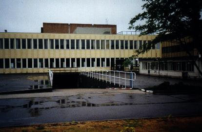
THE
CHAMPIONS: The Silent
Enemy (Robert Asher: April 1967)
As an ambulance leaves the NATO naval base gates, Stanton (Paul
Maxwell) goes to make a 'phone call before Sharron (Alexandra
Bastedo)
arrives. Admiral Parker (Warren Stanhope) is
stopped by reporters as
his car leaves the base.
THE
CHAMPIONS: The Search
(Leslie Norman: April 1967)
Haller (John Woodvine) arrives at the gates of the
NATO naval base.
THE
AVENGERS: The £50,000
Breakfast (Robert Day: July 1967)
Steed (Patrick Macnee) and Mrs Peel (Diana
Rigg) arrive in the Bentley
at the hospital to check on Dusty Rhodes.
THE
AVENGERS: The Curious
Case of the Countless Clues (Don Sharp: January
1968)
Earle (Anthony Bate) and Gardiner (Kenneth
Cope) collect their
'evidence' as Flanders (Edward de Souza) leaves the
underground car
park.
THE
CHAMPIONS: Autokill
(Roy
Ward Baker: Early 1968)
Klein (Paul Eddington) drops Brading off back at
Nemesis
HQ and later collects Tremayne (Anthony Nicolls) to
identify his stolen
case. Richard (William Gaunt) has his wallet stolen
by Barka (Eric
Pohlmann) and is later collected by Klein, but Craig (Stuart
Damon) and
Sharron (Alexandra Bastedo) follow.
THE
AVENGERS: Whoever Shot
Poor George Oblique Stroke XR40? (Cyril Frankel:
April
1968)
A security guard patrols The Ministry of Technology, Cybernetics and
Computer Division, administration building.
THE
SAINT: The Double Take
(Leslie Norman: Spring 1968)
After seeing Patroclos' car leave his Athens office, Simon (Roger
Moore), Eugene Patroclos (Gregorie Aslan)
and Annabel (Kate O'Mara)
race down to the front of the building and get into a car to follow the
first.
DEPARTMENT
S: The Trojan Tanker
(Ray Austin: Summer 1968)
The tanker drives through the gates of OrlyAirport, Paris.
THE
AVENGERS: Wish You
Were Here (Don Chaffey: September 1968)
Steed (Patrick Macnee) and Tara (Linda
Thorson) sit in Steed's yellow
Rolls outside the office of Tara's Uncle Charles.
DEPARTMENT
S: Last Train to
Redbridge (John Gilling: Late 1968)
Annabelle Hurst is waiting for Stewart Sullivan in a car outside
Draper’s office when she recognises two men who arrive by car Clark
(Derek Newark), and Rogers (Harvey Hall).
(Spotted by Paul Stroud, October 2012)
DEPARTMENT
S: Soup of the Day
(Leslie Norman: Spring 1969)
Jason King (Peter Wyngarde) arrives to climb the
fence of Ramos
& Ca. Lda. Ramos (David Healy) and Segres (Peter
Arne) enter
the building with heavies, and when Segres departs Jason follows him.
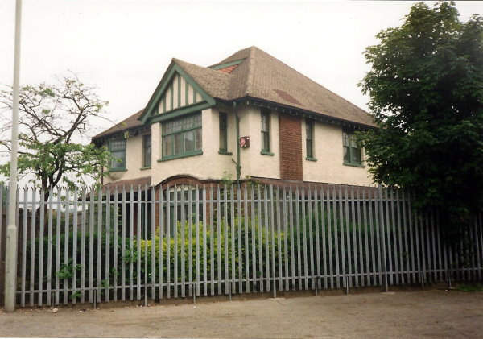
HERE
COME THE DOUBLE DECKERS!: Robbie
The Robot (Harry Booth: 1969)
The Double Deckers' robot knocks golf balls into Mr. Parson's garden
(cottage by studio gates). Tiger (Debbie
Russ) loses her tiger over the
garden wall and provokes Parson (Frank Thornton)
into calling in a
policeman (Ivor Salter). Scooper (Peter
Firth), Brains (Michael
Audreson) and Sticks (Bruce Clark) send
the robot in to fetch the
tiger. Later all the gang, including Spring (Brinsley Forde),
Billie
(Gillian Bailey) and Doughnut (Douglas
Simmonds), arrive at Century
Television Studios for a recording of Inventors Club.
HERE
COME THE DOUBLE DECKERS!: Starstruck
(Harry Booth: 1969)
Scooper (Peter Firth), Spring (Brinsley
Forde), Billie (Gillian
Bailey), Brains (Michael Audreson),
Doughnut (Douglas Simmonds), Sticks
(Bruce Clark) and Tiger (Debbie Russ)
wait by the gates of Century Film
Studios for autographs. Although the security guards (David
Lodge, Hugh
Walters) tell them off, when Zizi Bagor (Liz Fraser)
loses her dog at
the gates they are soon in demand.
HERE
COME THE DOUBLE DECKERS!: A
Helping Hound (Jeremy Summers: 1969)
Scooper (Peter Firth), Spring (Brinsley
Forde), Billie (Gillian
Bailey), Brains (Michael Audreson),
Doughnut (Douglas Simmonds) and
Sticks (Bruce Clark) try to earn some money by
doing odd jobs around a
house. Tiger (Debbie Russ) arrives with a dog she
has found and causes
havoc.
JASON
KING: An Author in
Search of Two Characters (Cyril Frankel: 1970)
Jason arrives at the film studios and pulls up outside Stage 8. Later,
Eve (Sue Lloyd) leaves the studios in her car, and
is followed by
Claire.
THE
PROTECTORS: Thinkback
(Cyril Frankel: 1972)
Harry (Robert Vaughn) and the Contessa (Nyree
Dawn Porter) arrive in an
ambulance at the deserted film studios where Wilson (Ian
Hendry) and
Peters (Keith Bell) are hunting their prey.
THE
PROTECTORS: A Kind of
Wild Justice (Jeremy Summers: 1972)
Paul (Tony Anholt) chases after the girl who shot
Harry after she tries
to kill him a second time, but loses her in the hospital car park.
THE
PROTECTORS: The Big Hit
(Roy Ward Baker: 1972)
Chino drives Paul and the Contessa to the Howard Swimwear factory.
THE
PROTECTORS: WAM Part
Two (Jeremy Summers: 1973)
Commissioner Braun (Olaf Pooley) arrives at the
cable car station in a
police car. Monica Davies (Jill Townsend) arrives
at the Hotel
Rothauser and is followed in by the Contessa (Nyree Dawn
Porter).
THE
PROTECTORS: Zeke's
Blues (Jeremy Summers: 1973)
Harry Rule (Robert Vaughan) arrives at the Gunter
Hotel to collect the
Contessa.
RETURN
OF THE SAINT: The
Diplomat’s Daughter (Charles Crichton: 1978)
Simon Templar (Ian Ogilvy) and Marie de la Garde (Lynn
Dalby) arrive at
Calais in Simon’s Jaguar. Simon goes to check the ferry and sees the
Rolls Royce driven by Louis (Artro Morris). He also
sees an argument
between Michel (Weston Gavin) and Louis after a
gendarme (Jeremy
Anthony) inspects the car. Shriver (Karl Held)
watches from his car.
Later Simon helps the Customs officers (Stanley McGeagh and
Stacy
Davis) as they search the Rolls. After no drugs are found in
the car
Marie drives off in Simon’s jaguar. Fortunately Simon has attached a
homing device and follows on his motorbike, ST2.
INSPECTOR
MORSE: Driven to
Distraction (Sandy Johnson: 1989)
Morse (John Thaw) and Lewis (Kevin
Whately) follow a potential attack
victim to Thames Valley Criminal Records Office in Sergeant Maitland's
(Mary Jo Randle) car. They find out from the
security guard at the gate
(Murray Ewan) that their assumptions were wrong.
PULASKI:
The Fictional Detective
(Christopher King: Spring 1987)
Jerome (Rolf Saxon) and Larry Summers (David
Andrews) travel around the
roundabout in front of the Cannon Elstree Studios in their Cadilac and
drive up Shenley Road.
Films:
ON THE BUSES (1971)
MAN ABOUT THE HOUSE
(1974)
N6: Shenley
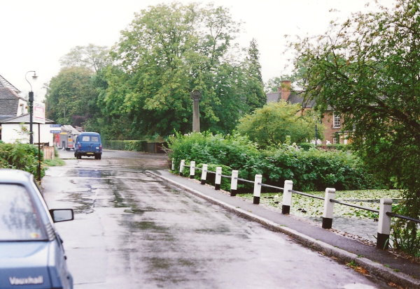
MAN FROM INTERPOL: All
The Dead Were Harrisons (1960)
A stranger calls on Mrs Harrison and kills her.
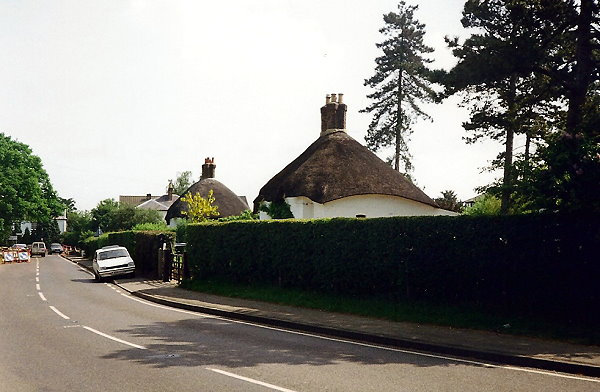
THE
HUMAN JUNGLE: Skeleton
in the Cupboard (Roy Baker: June 1964)
Dr. Corder drives past some thatched cottages (on Green
Street) on his
way to see Dr. Fisher.
DANGER
MAN: Whatever Happened
to George Foster? (Don Chaffey: November 1964)
John Drake (Patrick McGoohan) goes to the Taylor
Car Hire Company to
enquire about George Foster. He talks to Stan (Brian Anderson)
and Ben
(Bill Cortell) and is offered directions by a
motorcyclist who drives
away with Drake.
THE
SAINT: The Smart
Detective (John Moxey: February 1965)
Swann and Miller are manning a check point near Maidenhead and call
Peter Corrio when Templar’s Volvo passes.
(Identified by Geoff Dodd, November 2014)
JOURNEY
TO THE UNKNOWN: Miss
Belle (Robert Stevens: Autumn 1968)
Drake (George Maharis) steals some money from a car
outside a pub and
then enters. After getting a job with Miss Weston (Barbara
Jefford) he
drives her into the village. Whist waiting for a bus Drake takes the
opportunity to steal a shirt from a village shop, but he is seen by a
girl (Adrienne Posta).
RETURN
OF THE SAINT: Yesterday's
Hero (Roy Ward Baker: 1978)
Disket (Tony Vogel) parks his Land Rover at the
side of the road and
Roy Gates (Ian Hendry) climbs out to post a letter.
N7: Oaklands College, Elstree Way, Borehamwood
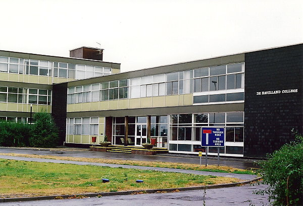
UFO: Confetti Check A-O.K.
(David Lane: November 1969)
Straker's American saloon car pulls up at the entrance.
N8: GEC Marconi Borehamwood/GPT Borehamwood, Elstree Way, Borehamwood
THE
PRISONER: Do Not
Forsake Me Oh My Darling (Pat Jackson: August
1967)
'The Colonel' (Nigel Stock) is taken in the
continual lifts up to see
Sir Charles by Villiers (James Bree). When he
leaves later to search
for Seltzman, he is followed by Potter (Frederic Abbott).
THE
PROTECTORS: A Kind of
Wild Justice (Jeremy Summers: 1972)
Harry (Robert Vaughn)and The Contessa (Nyree
Dawn Porter) go to see
George Soaper (Barry Stanton)at his garage (Opposite
GEC Building
between Elstree Way/Rowley Lane) to find out whom he rented a
car.
N9: The Thatched Barn
Hotel/Elstree Moat House, Rowley Lane, Borehamwood (demolished)
51°39'24.95"N, 0°15'0.80"W
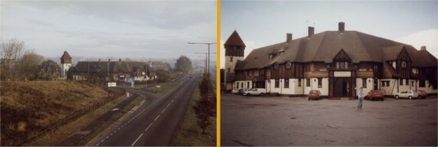
THE
SAINT: The Miracle Tea
Party (Roger Moore: March 1964)
Dr. Sandberg off the dual carriageway in his Rover after kidnapping
Geraldine McLeod.
THE
SAINT: Lida
(Leslie Norman: June 1964)
Lida Verity (Jeanne Moody) arrives at Captain
Kidd's nightclub in her
Jaguar and enters the building after being greeted by Bosun (Barry
Keegan.) Soon afterwards, Simon Templar (Roger
Moore) arrives in his
Volvo with Joan Wingate (Erica Rogers), and after
speaking to Bosun
they also enter the club, later they leave the building, and speaks to
Bosun again, who finds a monogrammed handkerchief in Lida's car as they
drive away; That night Templar and Bosun return to confront the manager.
THE
BARON: The Seven Eyes
of Night (Robert Asher: April 1966)
Cordelia (Sue Lloyd) follows Jeff Walker (Jeremy
Brett) to a hotel in
the Baron's Jensen. Cordelia (Sue Lloyd) enters to
make a telephone
call but when she returns she finds Jeff's car gone.
THE
PRISONER: The Girl Who
Was Death (David Tomblin: November 1967)
The danger man arrives at his local in his Lotus Elan.
DEPARTMENT
S: The Trojan Tanker
(Ray Austin: Summer 1968)
When the Department develops a role of film found in the late Veronica
Bray's (Patricia Haines) room, the pictures
produced show her standing
by the hotel pool.
DEPARTMENT
S: The Treasure Of The
Costa Del Sol (John Gilling: 1968)
Jason King (Peter Wyngarde) goes to a Marbella
hotel to interview Anita
(Olivia Hamlett) about Thorn.
RANDALL
AND HOPKIRK [DECEASED]: Could
You Recognise the Man Again? (Jeremy Summers:
Spring 1969)
A murder takes place in the car park of the hotel where Jeff and
Jeannie attend a party.
DEPARTMENT
S: The Bones of Byrom
Blain (Paul Dickson: 1969)
Jason goes to investigate The Nag's Head restaurant as he retraces
Blain's last journey. Crawley (Patrick Barr) and
Logan (Davyd Harries)
arrive in a Vale End Garage van and are met by Lomax (Albert
Shephard)
who tells them about King. Annabelle arrive in her car later that
evening to talk to King.
JASON
KING: Nadine
(Cyril Frankel: 1971)
Nadine (Ingrid Pitt) arrives at Achille's hotel
followde by Jason
(Peter Wyngarde).
THE
ADVENTURER: Mr
Calloway is a Very Cautious Man (Barry Morse)
Gene Bradley (Gene Barry) arrives for a meeting
with Mr Calloway
(Freddie Jones). Later
Gene Bradley is blindfolded and driven out of the underground car park
by Russell (David Hargreaves) and Soames (Anthony
Rowlands).
(Spotted by Jaz Wiseman, January 2005)
THE
ADVENTURER: Double
Exposure (Cyril Frankel: 1972)
After the completion of a successful mission Bradley (Gene
Barry),
Parminter (Barry Morse) and Brady's stunt double (Gene
Barry) relax by
the country club pool.
THE
PROFFESIONALS: Blood
Sports (Phil Meheux: 1980)
Light blue coupé is dropped off by the killer (Oliver Spender)
and his
girl (Sue Robinson) and are met by a contact, Rene
Lacoste (Yves
Beneyton), as they exchange cars. Later the Bodie (Lewis
Collins) and
Doyle (Martin Shaw) arrive after being called in by
the police.
Films:
TOMORROW AT TEN (1964)
HYSTERIA (1965)
INTIMATE GAMES (1976)
HAWKS (1988)
Television:
THRILLER: Come Out, Come Out Wherever You Are
(1974)
ALEXEI SAYLE'S STUFF
(1989)
N10: BBC Elstree Studios, Eldon Avenue, Borehamwoodû
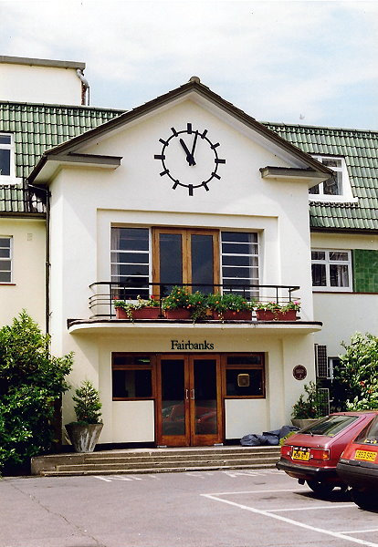
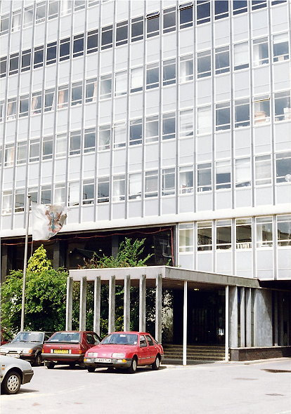
H.
G. WELLS' INVISIBLE MAN: Bank
Raid (Ralph Smart: 1958)
Williams (Brian Rawlinson) takes Peter Brady to
Crowther (Willoughby
Goddard) who blackmails him into stealing the vault key from
the bank
manager's flat.
H.
G. WELLS' INVISIBLE MAN: Secret
Experiment (Pennington Richards: 1958)
Sir Charles Anderson (Ernest Clark) arrives at
Castle Hill Laboratories
and is met by Doctor Hanning (Lloyd Lamble). Dee (Lisa
Daniely) drives
Peter Brady to Castle Hill Laboratories in a sports car. Later the
invisible Brady leaves Castle Hill in Sir Charles' car.
H.
G. WELLS' INVISIBLE MAN: Crisis
in the Desert (Pennington Richards: 1958)
Peter Brady and Yolande (Adrienne Corri) rescue
Jack Howard (Howard
Pays) from the Middle Eastern hospital.
H.
G. WELLS' INVISIBLE MAN: Behind
the Mask (Pennington Richards: 1958)
Brady and Constantine (Dennis Price) arrive at
Castle Hill
Laboratories. Brady sees President Democq (Arthur Gomez)
off from the
airport.
H.
G. WELLS' INVISIBLE MAN: Shadow
on the Screen (Pennington Richards: 1958)
Diane leaves Castle Hill Laboratories in a car with Peter Brady.
H.
G. WELLS' INVISIBLE MAN: The
Mink Coat (Pennington Richards: 1958)
Brady and Dee (Lisa Daniely) see Walker (Derek
Godfrey) and Bunny
(Harold Berens) try to steal the coat from Penny (Hazel
Court) and her
husband Marcel (Murray Kash) at the airport.
H.
G. WELLS' INVISIBLE MAN: Man
In Disguise (Quentin Lawrence/Peter Maxwell:
1959)
Brady arrives at Paris Airport in a taxi and enters the terminal
building. Nick (Tim Turner) followed by Madeleine (Leigh
Madison) leave
London Airport's terminal building and are met by Matt (Lee
Montague) in
his car. Brady, Sgt. Day (Howard Pays) and Sgt.
Winter (Jeanette
Sterke) follow the villains to their flat, Brady enters
invisibly.
Madeleine escapes from the flat in her car but she is followed by Sgt.
Winter who corners her in a telephone box. Brady pretends to break
down, he fiddles with the engine watched by Sally (Deborah
Watling)
while the villains catch up.
H.
G. WELLS' INVISIBLE MAN: Shadow
Bomb (Quentin Lawrence: 1959)
On hearing of the plight of his friend, Finch, Brady races from the
laboratory to his car and speeds off.
H.
G. WELLS' INVISIBLE MAN: The
Rocket (Quentin Lawrence: 1959)
Brady drives up to the transport office of Castle Hill Laboratories and
enters.
DANGER MAN:
No Marks For Servility
(Don Chaffey: 1964)
Armstrong's Rome hotel.
(Spotted by: Sam Mitchell)
THE
SAINT: The Romantic
Matron (John Paddy Carstairs:1962)
Mrs Carrington (Ann Gillis) arrives in her Pontiac
at the hotel in
Buenos Aires and is met by the Doorman (Victor Spinetti)
and Chico, the
bell boy (Kaplan Kaye). Soon after Ramon Venino (John
Carson) arrives.
Two heavies, Juanito (Larry Taylor) and Ernesto (Joby
Blanchard) appear
on the scene. The Saint (Roger Moore) later
confronts the villains and
the Inspector (Patrick Troughton) is there to see
that justice is done.
THE
SAINT: The Sporting
Chance (Jeremy Summers: 1963)
Cleever (Brandon Brady), Professor Muller (Gerrard
Heinz) and Pavan
(Godfrey Quigley) leave the Pavan Lumber Company
offices just as Simon
Templar (Roger Moore) arrives by Taxi. The offices
are seen later at
night, and the following day when Templar runs into the building.
THE
SAINT: The Ever Loving
Spouse (Ernest Morris: 1963)
The offices of the Fenwick Candy Company.
THE
SAINT: Jeannine
(John Moxey: May 1964)
Jeannine Roger (Sylvia Syms) gets into her car and
drives off from the
hotel. Simon Templar sees her leave and follows in his Volvo. Sergeant
Leduc (Robert Cawdron) in turn follows Templar in
his police Citroen.
The following day Jeannine leaves the hotel with Madame Chan (Jacqui
Chan) and they are driven off in a limousine.
THE
SAINT: The Loving
Brothers (Leslie Norman: Aug 1964)
The Saint's Sidney Hotel.
THE
SAINT: The Damsel in
Distress (Peter Yates: Aug/Sep 1964)
Simon Templar goes to the offices of Guiseppe Rolfieri and finds
Inspector Teal investigating the disappearance of Rolfieri and
£1,000,000.
THE
SAINT: The Golden Frog
(John Moxey: Nov/Dec 1964)
At San Carlos Airport, Simon Templar (Roger Moore)
is about to get into
a taxi when Julio (Alvaro Fontana) stops him. After
an argument Julio
leaves armlessly.
THE
SAINT: The Helpful
Pirate (Roy Baker: March 1966)
Simon Templer arrives at the Hotel Neuezeiten, Hamburg.
THE
SAINT: The Angel's Eye
(Leslie Norman: March 1966)
From their car Malone and Corbett watch as Templar, Mabel and Upwater
leave the Hotel Van Veeren in Amsterdam.
THE
BARON: Farewell to
Yesterday (Leslie Norman: September 1965)
The Baron's Citroen arrives at Poggio Rirteteo railway station and The
Baron and Cathy Dorne dash inside.
UFO: (April
1969 - September
1970)
Various episodes have establishing footage of SHADO vehicles and
Henderson's Rolls-Royce, e.g. Flight Path, Survival, Exposed, The
Dalotek Affair, Conflict, A Question of Priorities, Ordeal, The
Responsibility Seat etc.
UFO: Identified (Gerry
Anderson: May 1969)
A SHADO operative (Ayshea) approaches the main
buildings of
Harlington-Straker, and Ed Straker (Edward Bishop)
arrives in his car
shortly afterwards.
THE
ADVENTURER: Somebody
Doesn't Like Me (Cyril Frankel: 1972)
Gene Bradley (Gene Barry) arrives at ATV studios
and is shot by an
assassin (Garrick Hagen) in the car park. The
Commissionaire (Edward
Denith) sends for an ambulance.
THE
PROTECTORS: ... With a
Little Help From My Friends (Jeremy
Summers: 1972)
Chino (Anthony Chinn) drives the Contessa (Nyree
Dawn Porter) to the
Hotel Excelsior in the Rolls Royce, she returns to the car with the
President (Martin Benson) whom she has kidnapped.
Paul (Tony Anholt)
and the Contessa are present when the fake President is assassinated by
Harry (Robert Vaughn) in disguise.
THE
PROTECTORS: The Insider
(Don Leaver: 1973)
Paul (Tony Anholt) is stationed outside the film
studios waiting for
Smith to leave but he does not appear.
RETURN
OF THE SAINT: Yesterday's
Hero (Roy Ward Baker: 1978)
Simon (Ian Ogilvy) and Sandy (Annette
Andre) arrive at the offices of
Jonathan Cleaver and Co. in Simon's XJS.
Films:
ESCAPEMENT
(1958)
YOU MUST BE JOKING
(1965)
DOPPELGÄNGER (1968)
Television:
GENERALHOSPITAL (1972)
GRANGE HILL (1984)
ALAS SMITH AND JONES
(Sweeny/Police sketch)
N11: Stratfield Road, Borehamwood
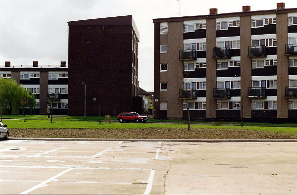
RANDALL
AND HOPKIRK [DECEASED]: The
Man from Nowhere (Robert Tronson: Spring 1969)
Mannering (Patrick Newall) and Hyde Watson (Michael
Gwynn) keep watch
on Jeannie's flat posing as road workers. When 'Marty' (Ray
Brooks)
arrives with flowers, Griggs (Neil McCarthy) backs
up in a van and he
is bundled inside.
THE
PROFFESIONALS: The
Acorn Syndrome (Martin Campbell: 1979)
Copeland (Ronald Hines) arrives at the Mill Lane
phone box where he is
instructed to change cars. Bodie (Lewis Collins)
who is hiding in the
original car manages to bug the Blue Avenger.
N12: Nicholas Hawksmoor Upper School, Green Street, Borehamwood (now part of Hertswood School)
H.
G. WELLS' INVISIBLE MAN: Bank
Raid (Ralph Smart: 1958)
Crowther (Willoughby Goddard) drives up to the
school and, posing as a
doctor, collects Sally (Deborah Watling) and drives
off with her. Diane
(Lisa Daniely) arrives at the school to pick up
Sally, but after Sally
fails to leave the school, she goes inside to find her.
THE
AVENGERS: Epic
(James Hill: February 1967)
Mrs. Peel is tricked into using a taxi driven by a disguised Stewart
Kirby's. Mrs Peel soon realises that they are going the wrong way, but
when she protests she is rendered unconscious by gas fed into her
sealed compartment (along Shenley Road to Cowley Hill past
the
Hertswood School a.k.a. Nicholas Hawksmoor Upper School, then taxi is
seen turning into Gateshead Road).
INSPECTOR
MORSE: Who Killed
Harry Field? (Colin Gregg: 1990)
Sergeant Lewis (Kevin Whately) goes to see Tony
Doyle (John Castle) at
his school.
N13: Leeming Road and Baldock Way, Borehamwood
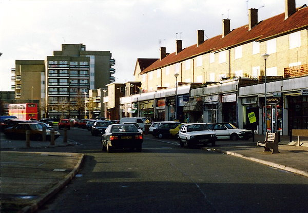
DEPARTMENT
S: Last Train to
Redbridge (John Gilling: 1968)
A drugged Mrs Taylor (Patricia English) is released
by (Harvey Hall)
only to be run down by a car (on Baldock Way).
(Identified by Alan Field, September 2008)
HERE
COME THE DOUBLE DECKERS!: Tiger
Takes Off (Harry Booth: 1969)
The hovercraft with Tiger (Debbie Russ) and Albert (Melvyn
Hayes)
aboard runs down the street (Leeming Road) causing
havoc. Scooper
(Peter Firth), Spring (Brinsley Forde),
Billie (Gillian Bailey), Brains
(Michael Audreson), Doughnut (Douglas
Simmonds) and Sticks (Bruce
Clark) attempt to catch the errant machine.
HERE COME THE DOUBLE DECKERS!:The Go-Karters (Harry Booth: 1969) The motorcycle policeman chases Spring's go-kart around the (Leeming Road) roundabout.
Films:
ON THE BUSES (1971)
Television:
GRANGE HILL (1990)
N14: The Mops and Brooms, Rowley Lane, Well End
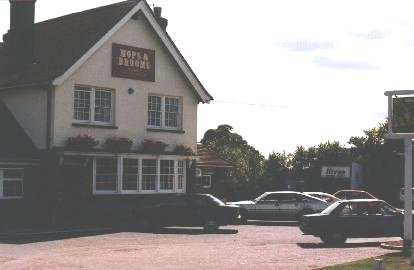
GIDEON’S
WAY: The Big Fix
(James Hill: September 1964)
George (??) drops Jo Short (Michel Ripper)
off at The King’s Head after
the race. He is looking for information about the race at Windsor. When
he leaves he is offered a lift by Dandy Johnson (Brian Phelan).
THE
PRISONER: The Girl Who
Was Death (David Tomblin: November 1967)
Death's short cut via the pub car park causes Number 6's Lotus to
double back up Rowley Lane.
DEPARTMENT
S: The Man From 'X'
(Gil Taylor: Early 1969)
Jason King, posing as Max Rinston, is driven past the pub on the way to
the villain's hide out.
RANDALL
AND HOPKIRK [DECEASED]: Somebody
Just Walked Over My Grave (Cyril Frankel: Summer
1969)
Jeff's Vauxhall makes off from the psychiatrist's up Well End Road by
the pub.
N15: Maxwell Road, Borehamwood
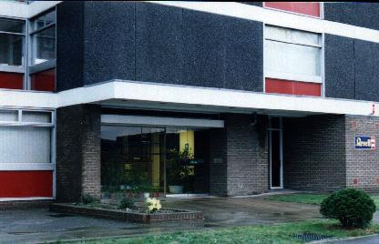
THE
CHAMPIONS: Happening
(Cyril Frankel: Early 1968)
Richard Barret is caught in a warehouse fire and has to jump tens of
meters down to the firefighters below (fire in Imperial
Studios complex
now car park for Imperial Place).
THE
AVENGERS: My Wildest
Dream (Robert Fuest: March 1968)
Tara, in Steed's yellow Rolls, visits the offices of the Acme Precision
Company Ltd. (The Revell Offices Maxwell Road) to
find Slater's diary.
Dyson (Tom Kempinski) runs from the building and
escapes in his car
with Tara following close behind him.
THE
AVENGERS: Super Secret
Cypher Snatch (John Hough: June 1968)
Steed, in his yellow Rolls, pays a visit to The Classy Glass Cleaning
Co. Ltd. offices (The Revell Offices Maxwell Road)
observed by Vickers
(Donald Gee) who follows Steed in his van when he
leaves.
THE
AVENGERS: Requiem
(Don Chaffey: January 1969)
Tara is taken for a ride to the villain's headquarters (this
side of
the road has been redeveloped, but the camera was placed directly
outside The Revell offices).
(Identified by John Viney, August 2006)
THE
AVENGERS: Homicide and
Old Lace (John Hough: January 1969)
John Steed and Tara (Linda Thorson) make their way
to the security
vaults (Bullens Packing Company in the Imperial Studios
complex,
redeveloped as Imperial Place) posing as security inspectors.
Later
Tara escapes from Intercrime and runs to warn Colonel Corf before the
men from Intercrime arrive.

RANDALL
AND HOPKIRK [DECEASED]: Just
for the Record (Jeremy Summers: April 1969)
Anne Soames and Jeff Randall are trapped in a burning warehouse while
Marty tries to save them (fire in Imperial Studios complex
now car park for Imperial Place, footage shot for Happening).
N16: M.G.M. Borehamwood
Studios, Elstree Way, Borehamwood
(demolished)
DANGER
MAN: The Prisoner
(Terry Bishop: 1960)
Colonel Vasco escorts James Carpenter to the airport.
DANGER
MAN: The Hired Assassin
(Charles Frend: 1960)
President Valesco is driven in his presidential car as a sniper
prepares to assassinate him.
DANGER
MAN: The Professionals
(Michael Truman: 1964)
Drake (Patrick McGoohan) waits outside the Ira’s
apartment
(administration building) until Minister Josef
Redall leaves. He then
enters the building. Also the clinic where Pearson is held.
(Spotted by: Sam Mitchell)
DANGER
MAN: Yesterday's
Enemies
(Charles Crichton: 1964)
Beirut Airport.
(Spotted by: Sam Mitchell)
DANGER
MAN: Whatever Happened
To George Foster? (Don Chaffey: November 1964)
Heathrow Airport Car park where Drake (Patrick McGooohan)
is waiting to
follow Certhia (studio car park opposite GEC Marconi).
Exterior of
Police Station where Drake is held.
(Spotted by: Sam Mitchell)
DANGER
MAN: Such Men Are
Dangerous (Don Chaffey: 1964)
The Crossways Motel (studio canteen).
DANGER
MAN: A Room In The
Basement (Don Chaffey: 1964)
Drake (Patrick McGoohan) meets with The Colonel (Michael
Gwynn) and
offers to take him to where he has the British secrets. They drive off
together.
(Spotted by: Sam Mitchell)
DANGER
MAN: Colony Three
(Don Chaffey: July 1964)
John Drake (Patrick McGoohan) waits outside Robert
Fuller’s flat in his
Mini (outside accounts department). Later Drake
returns to take Fuller
in for questioning.
DANGER
MAN: The Affair At
Castelevara (Quentin Lawrence: 1964)
The streets beneath Drake's hotel window.
(Spotted by: Sam Mitchell)
DANGER
MAN: The
Outcast (Michael Truman: 1964)
Gates of W.R.N.S. Quarters, Gibraltar.
DANGER
MAN: You’re Not In Any
Trouble, Are you? (Don Chaffey: 1964)
John Drake (Patrick McGoohan) goes into Piazza
Cinquecento outside Roma
Termini railway station to look for a black Mercedes as instructed
(studio car park opposite GEC Marconi). He finds the
car and it
contains a two-way radio by which he is contacted by ‘Wolf’.
DANGER
MAN: The Mercenaries
(Don Chaffey: 1964)
John Drake (Patrick McGoohan) follows Doctor Winter
to Saint Xavier
Hospitaland follows him inside (Administration Building).
Later
Buchanan (Shane Rimmer) is in front of the hospital
as and Coote’s Men
guard the hospital. General G’Niore (Peter Arne)
and John Drake piull
up in Drake’s car outside the hospital and Drake fights his way inside.
Later Drake retuns and attempts a pole vault into the building (through
a fake wing added to the Administration Building).
THE
SAINT: The Crime of
the Century (John Gilling: January 1965)
Raxel's men travel in convoy (down Elstree Way near studios)
to steal
the treasury printing plates.
(Identified by Bob Rocca, July 2008)
THE
PRISONER: Many Happy
Returns (Joseph Serf: February/April 1967)
Number 6 (Patrick McGoohan) borrows his Lotus 7 car
back from Mrs
Butterworth and heads into London to see his former colleagues (drives
along Elstree Way past the site of the MGM studios).
(Identified by Geoff Dodd and confirmed by James Hewett, 2007)
UFO: A Question Of
Priorities (David Lane: August 1969)
An ambulance pulls up at the hospital and Mary Straker (Suzanne
Neve)
gets out. Straker (Ed Bishop) arrives in his SHADO
car and follows her
into the building.
UFO: Confetti Check A-O.K.
(David Lane: November 1969)
An ambulance pulls up outside the hospital and Mary (Suzanne
Neve) is
taken inside on a stretcher, followed by Straker (Ed Bishop).
UFO: The Man Who Came Back
(David Lane: June 1970)
The Ambulance carrying Colonel Grey arrives at the hospital.
N17: Well End Lodge, Well End Road, Well End
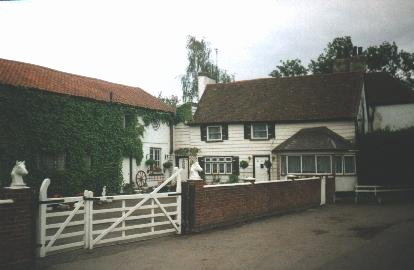
H.
G. WELLS' INVISIBLE MAN: Picnic
With Death (Pennington Richards: 1958)
Peter Brady's chauffeured car is involved in a road accident with a
lorry at a transport cafe.
THE
SAINT: The Rough
Diamonds (Peter Yates: 1963)
A Continental Armoured Security car is travelling towards Gatwick
Airport to pick up a consignment of industrial diamonds.
THE
AVENGERS: Silent Dust
(Roy Baker: June 1965)
Quince (Aubrey Morris) goes to meet Mrs Peel (Diana
Rigg) at the
Stirrup Cup Inn, and both are watched by Mellors (Conrad
Phillips).
Despite the protesters, Omrod (William Franklyn)
goes ahead with the
hunt aided by Juggins (Jack Watson), but Miss Snow (Joanna
Wake) lures
Steed to the stables where Croft (Norman Bird)
attacks him.
(Spotted by Michael Richardson, 1989)
THE
AVENGERS: The Town of
No Return (Roy Baker: July 1965)
Steed and Mrs Peel depart on a scooter with appropriate back-projection.
(Spotted by Michael Richardson, 1989)
THE
SAINT: The Paper Chase
(Leslie Norman: August 1966)
After stealing a military car, Simon Templar, Eric Redman and Hanya
drive towards the border crossing.
THE
PRISONER: The Girl Who
Was Death (David Tomblin: November 1967)
Number 6's Lotus pursues the strange woman's Jaguar.
THE
SAINT: Legacy for the
Saint (Roy Ward Baker: 1968)
Simon Templar arrives at airport after following the fleeing Charlie
and Penny
THE
SAINT: The Man Who
Gambled With Life (Freddie Francis: Summer 1968)
Simon drives back to London in his Volvo with the mouse Stella Longman
has given to him.
RANDALL
AND HOPKIRK [DECEASED]: A
Sentimental Journey (Leslie Norman: July 1968)
Dandy's Limousine passes Well End.
(Spotted by Michael Richardson, 1989)
RANDALL
AND HOPKIRK [DECEASED]: The
Smile Behind the Veil (Jeremy Summers: September
1968)
Back projection is used for Seaton's car travels back home after the
funeral.
(Spotted by Michael Richardson, 1989)
Film:
THE OLD CURIOSITY SHOP
(1934)
TAKE ME HIGH (1973)
Television:
THRILLER: Once the Killing Starts (1973)
N18: Buckettsland Lane, Well End
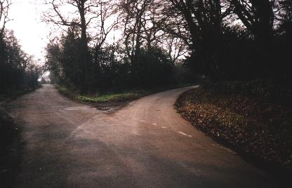
THE
AVENGERS: Silent Dust
(Roy Baker: June 1965)
The Minister's Rolls with Steed aboard drives past Buckettsland Farm on
the way to Manderley
THE
SAINT: The Fiction
Makers (Roy Baker: May 1966)
A van containing Warlock's men followed by Simon's car drives past the
junction as they make their way to rob Hermetico.
THE
BARON: The Maze
(Jeremy Summers: June 1966)
Mannering and Cordelia drive Cordelia's DAF past the sharp junction.
(Spotted by Michael Richardson, 1989)
THE
AVENGERS: Never, Never
Say Die (Robert Day: February 1967)
Whittle (Christopher Benjamin) knocks down Dr.
Stone (Christopher Lee)
for a second time and goes for help. Dr. Penrose (Jeremy
Young) arrives
with an ambulance and takes the body away. Steed (Patrick
Macnee), Mrs.
Peel (Diana Rigg), Whittle and Dr. James (Patricia
English) arrive in a
second ambulance to find the body gone.
(Identified by John MacDonald, December 2018)
THE
AVENGERS: Dead Man's
Treasure (Sidney Hayers: June 1967)
After following a sign for 'Swingingdale' at the crossroads Alex (Edwin
Richfield) and Carl (Neil McCarthy) drive
up a country lane
(Buckettsland Lane) and come to a junction (Buckettsland
Lane/
Holmshill Lane) with a sign for 'Swingingdale' pointing in
the
direction they have just come. Carl comes to the conclusion that
someone is cheating and they set off again (along Holmshill
Lane).
(Spotted by Michael Richardson, June 2012)
THE
PRISONER: The Girl Who
Was Death (David Tomblin: November 1967)
Sonia's E-Type turns down Buckettsland Lane from Well End Lane,
followed by Number 6's Lotus Elan.
THE
SAINT: Legacy for the
Saint (Roy Ward Baker: Spring 1968)
The Saint drives past the junction on his way back to Ed's club.
THE
AVENGERS: Super Secret
Cypher Snatch (John Hough: June 1968)
The two Classy Glass cleaner truck convoys meet and drive past.
JOURNEY
TO THE UNKNOWN: Poor
Butterfly (Alan Gibson: Alan Gibson: October
1968)
Steve Miller (Chad Everett) stops his vintage
roadster at the junction
and asks a farmer (Bernard Lee) the way to Measham
House.
RANDALL
AND HOPKIRK [DECEASED]: The
Smile Behind the Veil (Jeremy Summers: Autumn
1968)
At the junction, Marty blows the Gouldhurst/Stonehurst signpost round
on its axis to misdirect Jeff's Vauxhall.
(Spotted by Michael Richardson, 1989)
RANDALL
AND HOPKIRK [DECEASED]: Somebody
Just Walked Over My Grave (Cyril Frankel: Summer
1969)
At the junction with London Road, Jeff's Vauxhall evades the pursuing
police car.
THE
PROTECTORS: King Con
(Jeremy Summers: 1972)
Alan Sutherland follows The Contessa’s Rolls on its way to the races.
THE
PROTECTORS: One and
One Makes One (Don Chaffey: 1972)
Harry (Robert Vaughn) fakes a road accident at the
Morton Drive
junction in order to get Paul (Tony Anholt) into
the clinic run by
Skoder. An ambulance picks up Paul and carries him to the clinic.
THE
PROTECTORS: Sugar and
Spice (Charles Crichton: 1973)
Harry's Bentley, with Vicky aboard, is followed by a Volkswagen onto
the lane.
Film:
DIGBY, THE BIGGEST DOG IN THE WORLD
(1973)
Television:
THRILLER: Once the Killing Starts (1973)
N19: High Canons,
Buckettsland Lane, Well End
(only gatehouses on road visible)
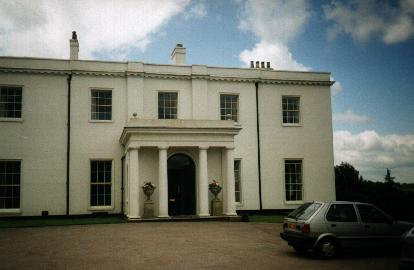
DANGER
MAN: The Brothers
(Cherles Frend: ????)
Drake leaves the Police Commissioner's after completing his mission.
THE
SAINT: The Invisible
Millionaire (Jeremy Summers: Autumn 1962)
Simon Templar's Volvo pulls up near a postman at the Well End gatehouse
to ask questions about a recent tragedy.
THE
SAINT: The Fellow
Traveller (Peter Yates: January 1963)
Matson (Brian Oulton) walks to a bus stop to meet
Simon Templar, but is
shot by a gunman from a passing truck soon after Templar arrives.
Templar returns to the scene later with police as Matson's body is
taken away in an ambulance.
THE
BARON: The Persuaders
(Leslie Norman: October 1965)
Establishing shots of The Baron's Jensen outside Sir Robert Ellacott's
house.
THE
AVENGERS: The Girl
From Auntie (Roy Baker: October 1965)
As Steed and Mrs. Peel drive along London Road in a bubble car near the
Well End gate house, they are passed by Georgie in Steed's Bentley. The
bubble car turns off at the junction along High Canons Lane whilst
Georgie continues on towards Well end.
THE
BARON: Time To Kill
(Jeremy Summers: May 1966)
The Baron's Jensen drives past the gates of The Carreras Institute of
Medical Research (Buckettsland Lane). The Baron
runs round the back of
the Carreras Institute and breaks in. Doctor Carreras is about to drive
through the gate house when he notices the Baron's car parked on the
lane. Cordelia escapes from the Institute.
THE
BARON: The High Terrace
(Robert Asher: September 1966)
The Baron's Jensen arrives at Madame Gregonlie's and the Baron and
Cordelia walk up to the house. A private detective drives into the
carpark already filled with Gregonlie's guest's cars.
THE
AVENGERS: From Venus
With Love (Robert Day: October 1966)
Mrs Peel is at Venus Browne's house when it is attacked by a light ray.
Mrs Peelcan only watch as the mysterious light winds its way down the
road (driveway from house to Buckettsland Lane gate house).
(Identified by Geoff Dodd, April 2010)
THE
SAINT: Escape Route
(Roger Moore: October 1966)
Simon Templar (Roger Moore) and John Wood (Donald
Sutherland) arrive at
the safe house by van.
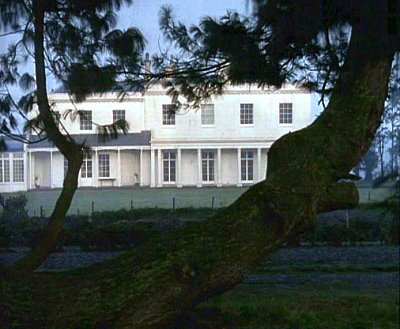
THE
AVENGERS: The Winged
Avenger (Gordon Flemyng/Peter Duffell: December
1966)
Mrs Peel advances on Sir Lexius Cray's large country house (High
Canons). Later Steed and Stanton race to Professor Poole’s
house in
Steed’s Bentley to save Mrs Peel. On the way Stanton follows the action
on the comic strip artwork he has brought with him (along
Buckettsland
Lane near gatehouse).
(Identified by Geoff Dodd, September 2008)
THE
SAINT: The
Organisation Man (Leslie Norman: Spring 1968)
Captain Yates (Terence Edmond) arrives at a
government safe house with
the captured foreign agent, Craddock (Simon Lack)
in an army truck full
of troops. The fake fusiliers led by Simon (Roger Moore),
Leander
(Glynn Edwards) and Roper (Tony Britton)
arrive (at the Buckettsland
Lane gatehouse) to replace the guard. Mason (Tony
Caunter) is sent to
the house whilst Yates inspects the guard. After the deception is
spotted, Kate Barnaby (Caroline Mortimer) is
rescued by Simon.
THE
SAINT: Legacy for the
Saint (Roy Ward Baker: Spring 1968)
The Saint is about to leave Ed Brown's gambling club when he meets the
owner. Ed (Reginald Marsh) leaves the club in his
Rolls Royce which has
been fetched for him by Charlie Lewis. On his way to London Airport Ed
passes the London Road/High Canons Lane junction whilst Simon, who is
close behind turns left onto High Canons Lane. Simon hears an explosion
and turns back onto London Road. Several days later Simon, Pietro, Tony
and Charlie are observed leaving the club (by the
Buckettsland Lane
gatehouse) and are followed by police officers, in a van,
posing as
telephone engineers. A police car full of bogus police officers arrive
at the club a few days later.
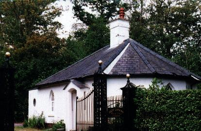
RANDALL
AND HOPKIRK [DECEASED]: It's
Supposed to be Thicker Than Water (Leslie
Norman: Autumn
1968)
Ramon's white Jaguar arrives at Crackan Manor's gatehouse (Buckettsland
Lane). Johnny Crackan later works on Ramon's car before
departing in it.
DEPARTMENT
S: The Man From 'X'
(Gil Taylor: Early 1969)
Annabelle Hurst passes the High Canons Lane/London Road junction whilst
trailing Jason and the two gang members in an attempt to hind their
headquarters, just before being captured.
RANDALL
AND HOPKIRK [DECEASED]: When
Did You Start to Stop Seeing Things? (Jeremy
Summers:
Spring 1969)
Jeannie (Annette André) advances on Laker's large
country house.
THE
PERSUADERS!: Five
Miles To Midnight (Val Guest: 1970)
Count Sangallo (Ferdy Mayne) waits outside his,
mansion for the arrival
of Torino (Robert
Rietty) and his men. After causing a diversion
Danny Wilde
(Tony Curtis), Brett Sinclair (Roger Moore),
Sidonie (Joan Collins) and
Frank Rocco (Robert Hutton) make their escape.
(Identified by Paul Stroud, March 2010)
THE
ADVENTURER: Nearly the
End of the Picture (Cyril Frankel: 1971)
Gene Bradley (Gene Barry) pays a visit to the home
of Clarissa de Vere
Allan (Fiona Lewis) and discovers she is not the
same Clarissa de Vere
Allan he met the previous night.
THE
PROTECTORS: Triple
Cross (John Hough: 1972)
Harry, the Contessa and Charlie arrive at Kofax's house in a black
Jaguar.
THE
PROTECTORS: Chase
(Harry Booth: Autumn 1972)
After leaving Bobby’s Tower, the Contessa takes the wounded Harry to a
nearby house.
THE
PROTECTORS: Sugar and
Spice (Charles Crichton: 1973)
A red Volkswagen parks opposite the gates of the Radcliff School for
Girls and the two men inside photograph Vicky (Debbie Russ)
as she
arrives at the school. Harry Rule (Robert Vaughn)
arrives to take Vicky
away to safety and Paul (Tony Anholt), acting as a
chauffeur, drives
them away.
THE
PROTECTORS: Trial
(Charles Crichton: 1973)
A police car races past the Well End gatehouse in order to get to the
judge before the bomb goes off in his car.
THE
PROTECTORS: Wheels
(David Tomblin: 1973)
Harry (Robert Vaughan) and Paul (Tony
Anholt) indulge in breaking and
entering and speedy driving to foil the plan of the embezzling Manning
(Dinsdale Landen).
INSPECTOR
MORSE: The Sins of the
Fathers (Peter Hammond: 1989)
Chief Inspector Morse (John Thaw) drives Helen
Radford (Kim Thomson) in
his Jaguar to the Radford country house. He is met by the butler (Noel
Johnson) who announces him to Isobel (Isabel Dean),
Stephen (Paul
Shelley) and Charles Radford (Lionel Jeffries).
Later he and Lewis
(Kevin Whately) return to talk over his findings
with the family and
Thelma Radford (Lisa Harrow).
Films:
TROUBLE IN THE GLEN
(1953),
THE STRANGE WORLD OF PLANET X
(1957)
YOU MUST BE JOKING
(1965)
THE DEVIL RIDES OUT
(1967)
THE SATANIC RITES OF DRACULA
(1972)
THE COBBLERS OF UMBRIDGE
(1972)
TIFFANY JONES (1973)
VOICES (1973)
DIGBY, THE BIGGEST DOG IN THE WORLD
(1973)
DOCTOR PHIBES RISES AGAIN
(1973)
MURDER ON THE ORIENT EXPRESS
(1974)
CAN YOU KEEP IT UP FOR A WEEK
(1974)
HALF MOON STREET
(1986)
HYDE PARK ON HUDSON
(2012)
Television:
ESPIONAGE: To the Very End (1963)
FREDERICK FORSYTH PRESENTS:
The Price of the Bride
(1990)
THRILLER: Sign it Death (1974)
BLISS (1995)
FOYLE'S WAR: The White
Feather (2002)
N20: The Thatched Cottage, London Road, Well End
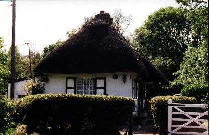
THE
AVENGERS: All Done
with Mirrors (Ray Austin: May 1968)
Tara King (Linda Thorson) arrives in a Moke at
Guthrie's cottage and
enters watched by Miss Emily (Nora Nicholson) who
is cutting the hedge.
Television:
THE NEWADVENTURES OF CHARLIE CHAN:
Charlie's Highland Fling
(1957)
N21: London Road (and Silver Hill), near. Shenley
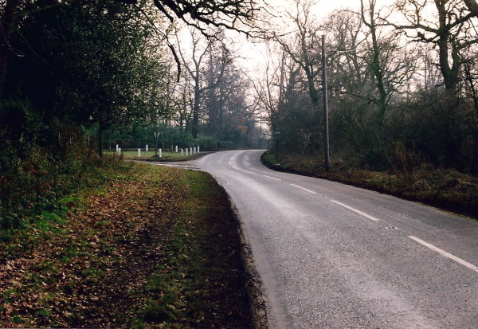
THE
SAINT: The Elusive
Ellshaw (John Moxey: 1963)
Kenneth Ripwell leaves his father's house for London in his sports car
he is followed by Simon in his Volvo.
(Identified by Alan Field, March 2010)
THE
AVENGERS: Too Many
Christmas Trees (Roy Baker: February 1965)
Steed and Mrs Peel return home after the adventure in a horse-drawn
trap.
(Identified by Geoff Dodd, May 2008)
THE
AVENGERS: The
Cybernauts (Sidney Hayers: March 1965)
Steed watches as Mrs Peel drives off in her Lotus.
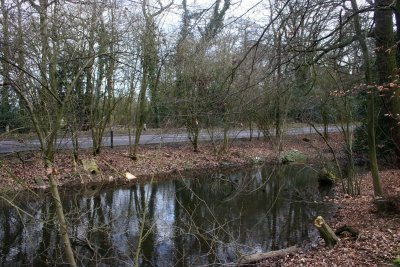
GIDEON’S
WAY: The Great Plane
Robbery (Leslie Norman: March/April 1965)
After leaving the Airport with the stolen gold the robbers drive along
the A134 where a decoy van driven by Kautsky is waiting for them. The
police give chase.
(Spotted by Alan Field, October 2008)
THE
AVENGERS: Room Without
A View (Roy Baker: April 1965)
After the adventure Mrs Peel is carried off by Steed pulling a rickshaw.
THE
AVENGERS: A Surfeit of
H2O (Sidney Hayers: May 1965)
Steed and Mrs Peel depart from Jonah’s farm in a Mini Moke.
THE
AVENGERS: The Town of
No Return (Roy Baker: July 1965)
Steed and Mrs Peel depart on a scooter after thwarting an invasion by
foreign agents.
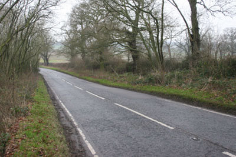
THE
AVENGERS: The Girl
From Auntie (Roy Baker: October 1965)
As Steed and Mrs. Peel drive along Silver Hill in a bubble car towards
High Canons Lane, they are passed by Georgie in Steed's Bentley. The
bubble car turns off at the junction and is seen heading back down
Silver Hill.
THE
BARON: Something for a
Rainy Day (Cyril Frankel: November 1965)
Mannering and Cordelia drive to Chateau Celeistine after meeting with
Seldon at the caravan site.
THE
AVENGERS: What the
Butler Saw (Bill Bain: December 1965)
Mrs Peel has parked her Lotus Elan in the countryside and is waiting
for a radio message from Steed.
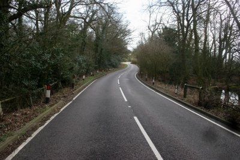
THE
AVENGERS: A Touch of
Brimstone (James Hill: December 1965)
After solving the case Steed and Mrs Peel ride home in a horse-drawn
carriage.
THE
AVENGERS: A Sense of
History (Peter Graham Scott: January 1966)
After solving the case Mrs Peel drives Steed home in a motorcycle
sidecar.
THE
AVENGERS: The House
That Jack Built (Don Leaver: January 1966)
After solving the case Steed and Mrs Peel ride home on a tandem bicycle.
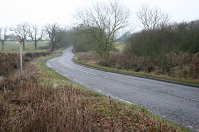
THE
AVENGERS: Honey for
the Prince (James Hill: February 1966)
Steed and Mrs Peel test drive the flying carpet given to them by the
Prince, riding on the back of a van.
THE
AVENGERS: How to
Succeed ... at Murder (Don Leaver: February 1966)
After solving the case Steed and Mrs Peel attempt to master the
ventriloquial art in the back of a caravan.
THE
AVENGERS: The Bird Who
Knew Too Much (Roy Rossotti: October 1966)
Steed and Mrs Peel drive to Heathcliff Hall after the Captain has
returned.
THE
PRISONER: Many Happy
Returns (Joseph Serf: February/April 1967)
After jumping into the Netco lorry, Number 6 is carried safely out of
the area (this is the road the truck takes after Number 6 is
aboard).
(Identified by James Hewett, May 2008)
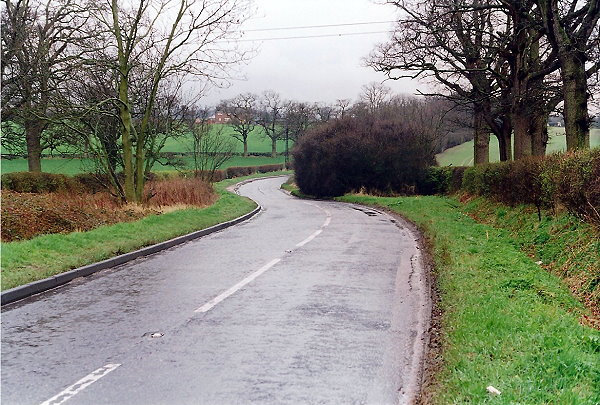
THE
AVENGERS: Never, Never
Say Die (Robert Day: February 1967)
Whittle (Christopher Benjamin) is driving along
trying to get a signal
from his car radio. A mysterious figure, Dr. Stone (Christopher
Lee),
walks out into the road and is knocked down by Whittle’s car.
(Spotted by Alan Field, June 2008)
THE
AVENGERS: Epic
(James Hill: February 1967)
Mrs. Peel is tricked into using a taxi driven by a disguised Stewart
Kirby's. Mrs Peel soon realises that they are going the wrong way, but
when she protests she is rendered unconscious by gas fed into her
sealed compartment (taxi drives past the swamp on London Road
near the
entrance to High Cannons).
THE
AVENGERS: Return of
the Cybernauts (Robert Day: June 1967)
Steed's Bentley pursues Mrs Peel's Lotus Elan along the country lanes
towards Beresford's house (shots from inside Bentley over
Steed’s head).
THE
AVENGERS: Murdersville
(Robert Asher: August 1967)
Mrs Peel drives Paul croft to his new home in Little
Storping-in-the-Swuff in her Lotus. On the way they pass Samuel Morgan
(John Chandos) driving a Limousine towards the
village.
THE
PRISONER: The Girl Who
Was Death (David Tomblin: November 1967)
Death's white E-Type Jaguar hurtles through the countryside with a
secret agent man in hot pursuit in his Lotus Elan (on the way
to Well
End).
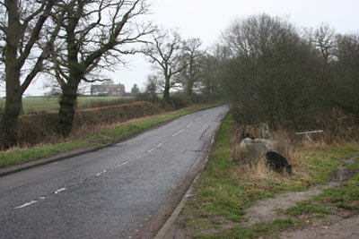
THE
PRISONER: Fall Out
(Patrick McGoohan: December 1967)
After crashing through the gates at the end of the tunnel leading from
the Village the truck pulling the cage carrying Number 6 (Patrick
McGoohan), the former Number 2 (Leo McKern)
and Number 48 (Alexis
Kanner), driven by the Butler carries on through an English
country
lane.
(Spotted by Alan Field, June 2008)
DEPARTMENT
S: The Man In The
Elegant Room (Cyril Frankel: Spring 1968)
Annabel follows Celina, in her Lotus Elan, when she leaves her house in
London.
(Spotted by Alan Field, October 2008)
THE
AVENGERS: Look -
(Stop me if you've heard this one) But There Were
These Two Fellers...
(James Hill: March 1968)
Jennings' Austin cab drives to Vauda Villa and Tara followes it in her
AC Cobra.
(Spotted by Mike Richardson, July 2012)
DEPARTMENT
S: The Pied Piper of
Hambledown (Roy Ward Baker: May 1968)
Aboard Jason’s Bentley, Annabelle takes Jason and Stewart to see where
the missing can of white paint was used (back projection).
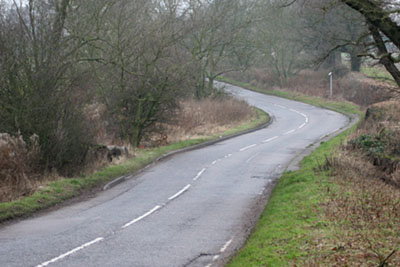
RANDALL
AND HOPKIRK [DECEASED]: A
Sentimental Journey (Leslie Norman: July 1968)
After leaving Jeff at the police station, Marty (Kenneth Cope)
attempts
to board Dandy’s car. Later Tony (Drewe Henley) and
Marty are tricked
into alighting from Dandy's Limousine (near Pursley Farm).
Later Marty
thumbs a lift from Dandy's car as it passes.
THE
AVENGERS: Killer
(Cliff Owen: September 1968)
Lady Diana pursues the coach from the REMAK building.
DEPARTMENT
S: The Treasure Of The
Costa Del Sol (John Gilling: September 1968)
After meeting Elaine Jason King is forced to ‘just drive’ his Bentley
along the coast road on the Costa del Sol.
(Spotted by Alan Field, October 2008)
RANDALL
AND HOPKIRK [DECEASED]: You
Can Always Find a Fall Guy (Ray Austin: August
1968)
Jeff and Marty set off in the Mini for Saint Ursula’s Convent,
Winchester.
RANDALL
AND HOPKIRK [DECEASED]: The
Smile Behind the Veil (Jeremy Summers: September
1968)
Seen in back projection in Jeff's car as he is misdirected by Marty and
later as Seaton’s men take Jeff to his car and drive to the river.
RANDALL
AND HOPKIRK [DECEASED]: The
Trouble with Women (Cyril Frankel: October 1968)
Alan Corder holds Jeff at gunpoint while Susan Lang drives Corder's
limousine to a secluded spot in the country (High
Canons/Silver Hill
junction).
DEPARTMENT
S: The Man From 'X'
(Gil Taylor: Early 1969)
Jason King, posing as Max Rinston, is driven to the villain's hide out.
Annabelle Hurst in her white Lancia is on their tail.
(Spotted by Alan Field, October 2008)
RANDALL
AND HOPKIRK [DECEASED]: All
Work and No Pay (Jeremy Summers: Early 1969)
Jeanie drives her mini to the foster brothers’ for a demonstration of
their spiritualist powers.
THE
PROTECTORS: Trial
(Charles Crichton: 1973)
At about the time Justice Cronin is due to be blown up, police cars
race round the area.
(Spotted by Alan Field, July 2008)
Film:
ON THE BUSES (1971)
TAKE ME HIGH (1973)
N22: The Thatched Lodge, Green Street, Shenley
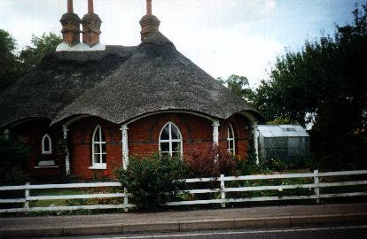
THE
BARON: The Persuaders
(Leslie Norman: October 1965)
Roddy Harrington (James Villiers) pulls up in his
car and enters the
cottage. Roddy leaves the cottage and drives off in a Landrover. Verity
Montand (Georgina Ward) leaves the house with a
suitcase and drives off
in Roddy's car. That night Roddy's Landrover arrives back at the
cottage.
MAN IN A SUITCASE:
The Whisper (Charles
Crichton:
Spring 1967)
McGill goes to visit the father of Alfred Porter at his cottage to see
if he has had contact with his son (stock footage from THE
BARON).
(Identified by Geoff Dodd, June 2007)
THE
ADVENTURER: To the
Lowest Bidder (Val Guest: 1972)
Lizzy leads Bradley (Gene Barry) to the cottage
where Sarah (Jane
Asher) is being held by Forrester (Carl Rigg)
with the help of Laura
(Sheila Gish).
N23: Shenley Hospital, Black Lion Hill, Shenley (totally redeveloped)
THE
BARON: You Can't Win
Them All (Don Chaffey: March 1966)
Osbourne is sent to Shelby Prison where he meets with a sticky end
after offering The Baron some information.

Photo: Geoff Dodd
THE
AVENGERS: Stay Tuned
(Don Chaffey: November 1968)
After visiting the Dr Meitner, the department’s psychiatrist, Tara
drives Steed home in her Lotus Europa (across North Avenue at
the
junction with Queens Way as viewed from Black Lion Hill).
(Identified by Geoff Dodd, January, 2010)
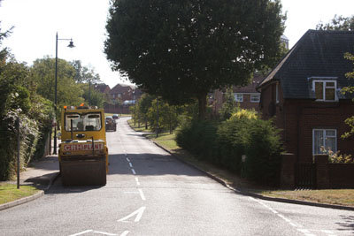
RETURN
OF THE SAINT: Yesterday's
Hero (Roy Ward Baker: 1978)
Simon Templar (Ian Ogilvy) drives his Jaguar to the
army Combat
Training Centre (Porters Park Drive entrance) to
talk to Dizzy.
(Identified by Stephen Winterbottom, 2004, confirmed by Alan
Field 2007)
INSPECTOR
MORSE: Fat Chance
(Roy Battersby: 1990)
Morse (John Thaw) arrives in his Jaguar at a
private hospital where
Geoffrey Boyde (David Gant) is being watched over
by a nun (Peggy
Mount).
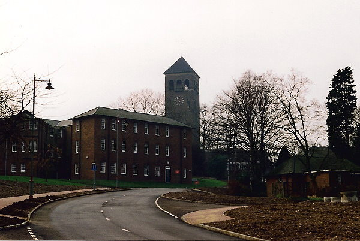
INSPECTOR
MORSE: Who Killed
Harry Field? (Colin Gregg: 1990)
Sgt Lewis (Kevin Whately) finds the tower that
features in Harry's
painting.
N24: Pound Lane, Shenley
THE
AVENGERS: Legacy of
Death (Don Chaffey: July 1968)
Tara's Lotus is followed by all the villains' cars.
THE
AVENGERS: Stay Tuned
(Don Chaffey: November 1968)
Tara's Lotus drives around the village roads.
JOURNEY TO THE UNKNOWN:
Miss Belle (Robert
Stevens:
Autumn 1968)
Drake (George Maharis) sees some children playing
on the village green
and decides to phone the authorities about Robert.
RANDALL
AND HOPKIRK [DECEASED]: The
House on Haunted Hill (Ray Austin: Summer 1969)
Merston Village, where a meeting about Merston Manor is in progress.
Film:
THE OLD CURIOSITY SHOP
(1934)
N25: Ravenscroft Farm, Mimms Lane, Shenley
THE
PROTECTORS: Baubles,
Bangles and Beads (Jeremy Summers: 1973)
Kate Bergen (Yvonne Antrobus) is observed entering
the farmhouse where
her father is hiding by one of the gang members. A taxi drops the
Contessa (Nyree Dawn Porter) at a gate just beyond
the farm and she
enters the field. After meeting in the woods, Kate takes the Contessa
to meet her father but the house is soon surrounded by gang members and
Harry Rule (Robert Vaughn) has to fight his way
into the building.
N26: Harris Lane/Rectory Lane/Mimms Lane Junction, Shenley
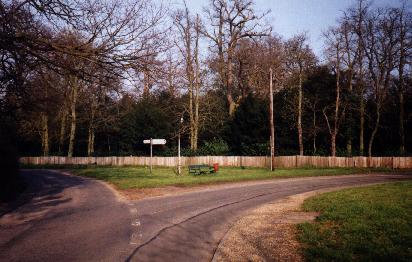
H.
G. WELLS' INVISIBLE MAN: The
Locked Room (Pennington Richards: 1958)
Tania is driven past the junction before she realises she has been
kidnapped.
H.
G. WELLS' INVISIBLE MAN: Shadow
on the Screen (Pennington Richards: 1958)
Diane is driving Peter Brady to the London docks when she is observed
and followed by two strangers in a car by the junction.
H.
G. WELLS' INVISIBLE MAN: Point
of Destruction (Quentin Lawrence: 1959)
Katrina (Patricia Jessel) telephones Brady from a
'phone box in order
to lure him into Stefan's (Derren Nesbitt) sights.
When she sees Brady
drive past in his sports car followed by Stefan, she jumps into his car
and they give chase.
H.
G. WELLS' INVISIBLE MAN: Man
in Disguise (Quentin Lawrence/Peter Maxwell:
1959)
Nick (Tim Turner) telephones Brady from a call box,
waits in a car for
Brady and Sally (Deborah Watling) to drive past and
follows them in his
car.
H.
G. WELLS' INVISIBLE MAN: Shadow
Bomb (Quentin Lawrence: 1959)
Brady in his sports car, racing to save Finch, first overtakes traffic
on Mimms Lane and then speeds around the corner from Rectory Lane into
Mimms Lane.
THE
SAINT: The Rhine Maiden
(James Hill: November 1964)
Simon and Julia Harrison visit the Schreiber clinic in Templar's Volvo.
THE
AVENGERS: A Touch of
Brimstone (James Hill: December 1965)
Steed and Emma hurtle towards the conference past the junction in
Steed's Bentley.
THE
AVENGERS: Escape in
Time (John Krish: September 1966)
Mrs Peel does her best to follow Vesta (Judy Parfitt)
in her Lotus
(along Mimms Lane) .
(Identified by Geoff Dodd, September 2008)
THE
AVENGERS: The
See-Through Man (Robert Asher: November 1966)
Elena's car passes the junction en route to meet Ackroyd, followed by
Mrs Peel's Lotus Elan.
THE
AVENGERS: Something
Nasty in the Nursery (James Hill: March 1967)
Dobson looks back down Rectory Lane to see if he has shaken off his
pursuers. Later Gordon, in his van, drives up the lane to deliver an
explosive package to Steed.
THE
AVENGERS: Dead Man's
Treasure (Sidney Hayers: June 1967)
Bobby Danvers (Rio Fanning) eludes the pursuit of
Alex (Edwin
Richfield) and Carl (Neil McCarthy).
Steed (Patrick Macnee) and Mrs
Peel (Diana Rigg) arrive to attend Benstead's
Annual Car Rally. The
cars head off on the hunt. Mrs Peel returns to the hall by Mercedes
followed by Steed and Penny in the Bentley.
THE
AVENGERS: Murdersville
(Robert Asher: August 1967)
Mrs Peel drives Paul croft to his new home in Little
Storping-in-the-Swuff in her Lotus (driving out of Shenley
along Harris
Lane).
THE
PRISONER: The Girl Who
Was Death (David Tomblin: November 1967)
Death's white E-Type Jaguar hurtles past the gates with a secret agent
man in hot pursuit in his Lotus Elan.
THE
AVENGERS: False Witness
(Charles Crichton: June 1968)
Tara's Lotus Europa pulls up by a prop 'phone box on the junction
triangles.
THE
AVENGERS: Legacy of
Death (Don Chaffey: July 1968)
Tara's Lotus Europa pulls up the driveway to the hall, thus giving the
six other cars which are following the slip at the junctions.
THE
AVENGERS: Stay Tuned
(Don Chaffey: November 1968)
Steed's grab for the wheel causes Tara's Lotus Europa to go out of
control whilst heading towards the junction.
THE
ADVENTURER: To the
Lowest Bidder (Val Guest: 1972)
Forrester (Carl Rigg) drops Carlson (David
Kelly) at the gates of the
Parkington School for Girls where he meets Johnny (John York).
Gene
Bradley (Gene Barry) drives through the gates of
the school to keep an
eye on Sarah Cookson. Later Sarah (Jane Asher)
meets with Carlson at
the junction to exchange herself for Lizzy (Gillian Bailey),
whom he
has kidnapped. Brady arrives just in time to see Carlson drive off, but
Lizzy is on hand to help.
RETURN
OF THE SAINT: The Debt
Collectors (Leslie Norman: 1978)
Jimmy (Bob Sherman) drives Christine Hanson (Diane
Keen) to a quiet
spot in a wood so that she can change her clothes.
Films:
ON THE BUSES (1971)
Television:
THRILLER: The Eyes Have It (1973)
EASTENDERS (1991)
N27: Shenley Hall, Rectory Lane, Shenley
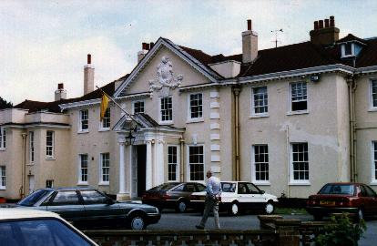
THE
AVENGERS: The Bird Who
Knew Too Much (Roy Rossotti: October 1966)
Mrs Peel (Diana Rigg) goes to visit Jordan (Ron
Moody) about Captain
Crusoe, only to get an unwelcome visit from Robin (Clive
Colin-Bowler).
THE
AVENGERS: Something
Nasty in the Nursery (James Hill: March 1967)
Gordon (Trevor Bannister) arrives in his van at
Steed’s London flat
carrying an explosive package for Steed.
(Spotted by Chris Bentley, August 2008)
THE
AVENGERS: Dead Man's
Treasure (Sidney Hayers: June 1967)
Bobby Danvers (Rio Fanning) hides his papers at
Benstead Manor. Steed
(Patrick Macnee) and Mrs Peel (Diana Rigg)
arrive to attend Benstead's
Annual Car Rally there, and along with Alex, Carl, Mike (Norman
Bowler)
and Penny (Valerie Van Ost) are despatched by the
butler, Bates (Ivor
Dean), who follows by Land Rover. Mrs Peel returns to the
hall by
Mercedes with Mike secreted in her boot, later followed by Steed and
Penny in the Bentley.
THE
AVENGERS: You'll Catch
Your Death (Paul Dickson: May 1968)
Establishing shot of Steed's Rolls Royce at the Anastasia Nursing
Academy.
JOURNEY
TO THE UNKNOWN: Poor
Butterfly (Alan Gibson: October 1968)
Steve Miller (Chad Everett) arrives in his vintage
roadster at Measham
House and is met by the butler (Michael Nightingale).
After being
mistaken for someone else by the Aviator (Donald Gee),
Rose (Susan
Brodrick) tries to persuade him to take her to London. Lady (Fay
Compton) and Robert Sawyer (Edward Fox)
have other ideas and Steve is
soon leaving alone himself.
THE
ADVENTURER: Make It a
Million (Barry Morse: 1972)
Bradley arrives at Charlesworth's house for a party at which he hopes
to meet himself.
THE
ADVENTURER: The
Not-So-Merry Widow (Cyril Frankel: 1972)
The country residence of Lord and Lady Battersley.
(Spotted by Jaz Wiseman, November 2001)
THE
PROTECTORS: Zeke's
Blues (Jeremy Summers: 1973)
Harry Rule arrives at Bradley's and is let in by Max
Kasankas and Fred, who are following Harry, park in
the drive. Later the Contessa and Zeke arrive in their car.
Film:|
UP JUMPED A SWAGMAN
(1965)
Television:
THRILLER: The Eyes Have It (1973)
N28: Radlett
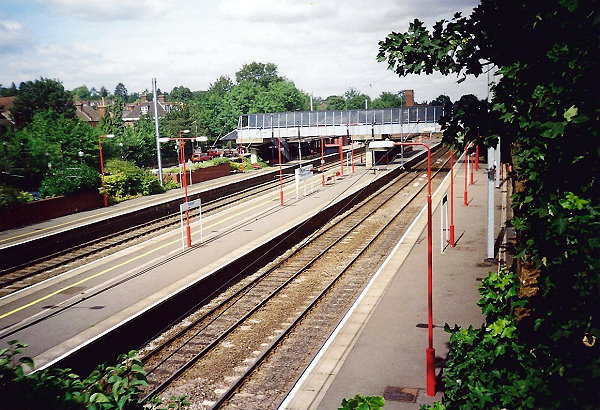
THE
HUMAN JUNGLE: Heartbeats
in a Tin Box (Roy Baker ???)
Christine Box (Judith Scott) contemplates suicide
as she walks home
past the railway station (Radlett Station) from
teaching a science
evening class
THE
SAINT: The Miracle Tea
Party (Roger Moore: March 1964)
The Saint takes Aunt Hattie to a spot where she can spy on the local
chemists shop, R. Osbert’s (corner of Station Road and
Watling Street).
(Identified by Geoff Dodd, June 2005)
THE
AVENGERS: A Touch of
Brimstone (James Hill: December 1965)
After seeing the Sheik humilitated at the theatre Steed drives Emma
home
in his Bentley. He tells her that the Honourable John Cartney is the
chief suspect (the Bentley drives past shops on Watling
Street, same
shops also feature in back projection).
(Identified by ‘Mark O’ on the Britmovie Forum,
July 2009)
JOURNEY
TO THE UNKNOWN: Jane
Brown's Body (Alan Gibson: 1968)
Jane (Stephanie Powers) recalls her fateful meeting
with Robert (Clive
Graham) at Radlett Station.
(Spotted by Michael Richardson, 1989)
JOURNEY
TO THE UNKNOWN: The
New People (Peter Sasdy: 1968)
Hank Prentiss (Robert Reed) meets Matt (Milo
O'Shea) leaving the
station and they discuss the inquest.
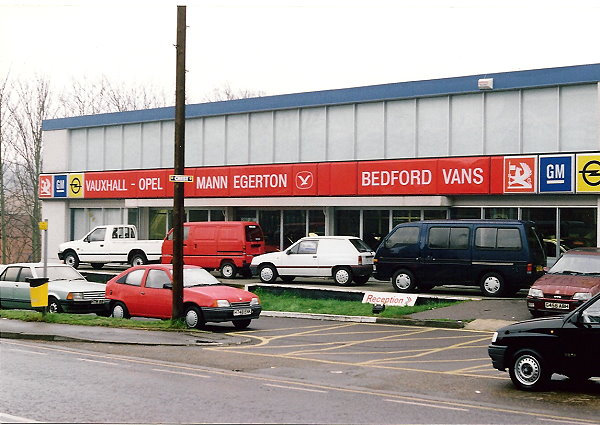
INSPECTOR
MORSE: Driven to
Distraction (Sandy Johnson: 1989)
Maitland (Mary Jo Randle) and Lewis (Kevin
Whately) are driven by Morse
(John Thaw) in his Jaguar to Boynton Ltd (Vauxhall
dealership, Watling
Street) to question Boynton (Patrick Malahide).
Boynton is later
attacked by Tim Ablett (Christopher Fulford) who
covers him in petrol
from a tanker.
Television:
SPYDER'S WEB: Romance on Wheels (1972)
N29: Kendal's Hall, Radlett Prep School, Watling Street, Radlett
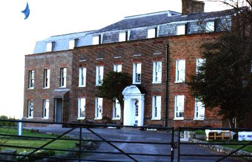
THE
AVENGERS: A Surfeit of
H2O (Sidney Hayers: May 1965)
The Mrs Peel is sent by Steed to visit Eli Barker at his home. Steed
(Patrick Macnee) and Mrs. Peel (Diana Rigg)
arrive outside the home of
Jonah Barnard in a Mini Moke. Here Steed tells Mrs Peel about the
mysterious weather conditions. Later Steed returns to Jonah’s house
expecting to meet Mrs Peel. At the end of the adventure Steed bids
farewell to Jonah and Mrs Peel drives off with Steed in the Moke.
(Identified by Geoff Dodd, April 2017)
THE
AVENGERS: What the
Butler Saw (Bill Bain: December 1965)
A helicopter lands in the grounds of Group Captain Miles house. Steed
(Patrick Macnee) gets out, posing as an RAF
officer, and
enters the
house. Later Steed takes off in the helicopter with Mrs Peel.
THE
AVENGERS: From Venus
With Love (Robert Day: October 1966)
Mrs Peel (Diana Rigg) leaves the house where Smith
was chimney sweeping
to pursue the strange light in her Lotus.
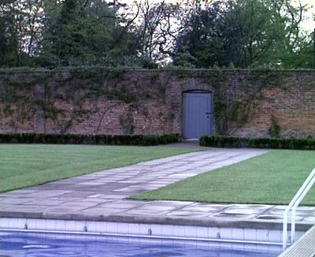
THE
AVENGERS: All Done
with Mirrors (Ray Austin: May 1968)
Steed (Patrick Macnee) is being held under close
arrest by Mother
(Patrick Newell) at his pool-side HQ, as a response
to the theft of
secrets from the Carmadoc Research Establishment. Mother provides Steed
with all the comforts of home with the help of Rhonda (Rhonda
Parker)
and others. Tara King (Linda Thorson) arrives to
take over Steed’s
duties and she is introduced to Watney (Dinsdale Landen)
who has been
snorkelling round the pool. Later, when Tara is reported missing, Steed
decides to break his parole and goes looking for Tara.
THE
AVENGERS: Stay Tuned
(Don Chaffey: November 1968)
Tara arrives at Mother/Father's HQ to see Proctor (Gary Bond)
by
Steed's Rolls, and when Steed (Patrick Macnee)
leaves the building he
too can now see Proctor - and dispatches him before driving off.
THE
AVENGERS: Take-Over
(Robert Fuest: February 1969)
Grenville (Tom Adams), Sexton (Garfield
Morgan), Lomax (Keith Buckley)
and Circe (Hilary Pritchard) arrive at the home of
Bill and Laura
Bassett. Later when Groom (John Comer) tries to
escape, he falls victim
to Grenville's remote control death.
THE
PROTECTORS: Trial
(Charles Crichton: 1973)
Arthur Gordon (Joss Ackland) visits Judge Cronin (Richard
Hurndall) at
the Clyde Nursing Home and attacks him. Later he plants a bomb in the
Judge's Rolls Royce.
THE
NEW AVENGERS: Faces
(Ray Austin: July 1976)
The real Craig (Richard Leech) is shot by Mullins
as he dives into an
open-air swimming pool.
Film:
LAW AND DISORDER
(1958)
KILL OR CURE (1962)
N30: Kendall Hall Farm - fields, Elstree
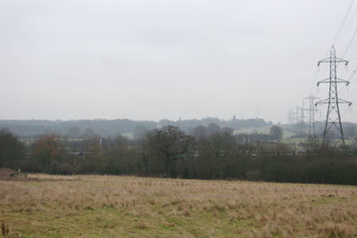
THE
AVENGERS: A Surfeit of
H2O (Sidney Hayers: May 1965)
Poacher, Ted Barker, resident of Lower Storpington is drowned in a
torrential rainstorm in the middle of a field. John Steed (Patrick
Macnee) and Mrs Peel (Diana Rigg) arrive
to investigate. After making
enquiries, Steed and Mrs Peel return in a Mini Moke to make
meteorological measurements in the field. They are watched by Frederick
(Terry Plumer) who wrecks the equipment after the
agents have left to
find Sir Arnold Kelly (John Kidd). They return to
the field with Sir
Arnold and leave him to make further measurements. Steed returns to the
field with Jonah Barnard (Noel Purcell) and they
find Sir Arnold
missing.
THE
AVENGERS: Silent Dust
(Roy Baker: June 1965)
Once the hunt gets underway Mrs Peel (Diana Rigg)
finds she is
surrounded Omrod (William Franklyn) and his
cronies; Juggins (Jack
Watson) and Miss Snow (Joanna Wake). Mrs
Peel deals with Miss Snow.
After learning of Omrod’s plans, Mrs Peel is hunted down by Omrod and
Juggins. John Steed (Patrick Macnee) arrives just
in time to deal with
Juggins with the help of some anti-blood sports protesters.
THE
AVENGERS: Bizarre
(Leslie Norman: February 1969)
Helen Pritchard (Sally Nesbitt) wanders through the
snow in her nightie
and collapses. Captain Cordell (James Kerry) later
surveys the scene
and sees the railway line.
N31: Aldenham Wood Lodge, Butterfly Lane/Watling Street, Elstree
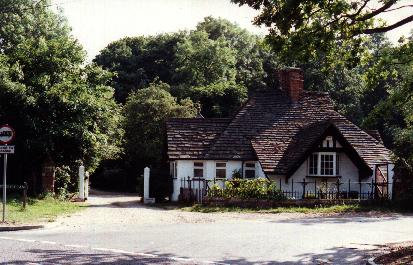
THE
AVENGERS: Too Many
Christmas Trees (Roy Baker: February 1965)
Steed and Mrs Peel turn onto Butterfly Lane in the Bentley.
(Spotted by Michael Richardson, 1989)
THE
AVENGERS: A Sense of
History (Peter Graham Scott: January 1966)
Broom's car enters the driveway of 'St. Bodes'.
(Spotted by Michael Richardson, 1989)
THE
AVENGERS: Never, Never
Say Die (Robert Day: February 1967)
Steed follows the Neoteric Research Unit ambulance in his Bentley from
the cottage where he was attacked by the strange man, they leave the
woods and join a road.
THE
PROFFESIONALS: The
Acorn Syndrome (Martin Campbell: 1979)
Bodie (Lewis Collins) and Doyle (Martin
Shaw) chase after the killers,
but lose them. They radio Cowley with the information.
N32: Haberdashers' Aske's
School, Aldenham Road, Elstree
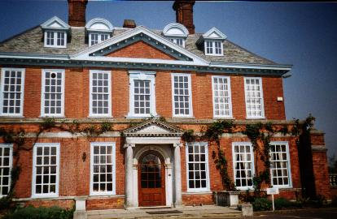
MAN FROM INTERPOL: Soul
Pedlars (Max Varnel: 1958)
Anthony Smith, accompanied by Hatvany's wife and Inspector Muller, pass
the gates in their car as they leave for a special assignment.
H.
G. WELLS' INVISIBLE MAN: Death
Cell (Peter Maxwell: 1959)
Ellen Summers (Lana Morris) escapes through the
gates of the Private
Sanatorium in a delivery van. Peter Brady (Tim Turner)
then enters
through the same gates when he visits the establishment to check her
story.
H.
G. WELLS' INVISIBLE MAN: The
White Rabbit (Quentin Lawrence: 1959)
Professor Blair instructs his guards to search the grounds of Villa
Roché for the rabbit which Suzanne Dumasse (Marla Landi)
finds in the
nearby woods. Suzanne takes Peter Brady in her Citroen 2CV to study the
woods observed by the Professor. Suzanne pretends to break down outside
the gates and is confronted by the chauffeur. Later the chauffeur opens
the gates to Max (Reed de Rouen) in his white
convertible carrying
Suzanne. Brady drives the girl's car to the gates of the house and
attempts to enter, a Limousine pulls up carrying Roché which an
invisible Brady boards to gain access to the house. Later Hugo (Austin
Trevor) arrives with other police officers to raid the villa.
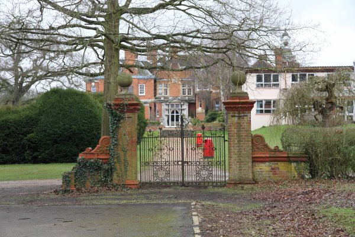
DANGER
MAN: The Sisters
(Seth Holt: 1959)
Drake is driven to see Hardy.
DANGER
MAN: Find and Return
(Seth Holt: 1959)
Drake is driven to see Hardy.
THE
SAINT: The Romantic
Matron (John Paddy Carstires: 1962)
The bullion waggon leaves Buenos Aires.
THE
HUMAN JUNGLE: Solo
Performance (Roy Baker, ???)
Dr Corder (Herbert Lom) arrives at the hospital in
his Humber Hawk and
getting out of the vehicle he has to pass several reporters before
entering the building.
THE
HUMAN JUNGLE: Conscience
on a Rack (Roy Baker: Feb 1964)
Three schoolgirls run across the car park towards the school. Returning
to the school after her appointment with Dr Corder, Dorothy Wyley also
crosses the cap park. The following day a Dennis Ambulance arrives at
the hospital and Wyley is admitted. Sometime later, Dr Murphy (Megs
Jenkins) and Wyley (Flora Robson) stroll
around the hospital grounds,
where they come across Hazel Phillips (Adrienne Posta)
and the Vicar
(Ronald Hines). Feeling guilty about not making a
donation to the
church, Wyley attempts to remove her ring to give it to him, but when
she is unable to do this she becomes agitated and insists on gifting
her expensive watch instead.
THE
HUMAN JUNGLE: The
Quick and the Dead (Roy Baker: ???)
George Shelton (Robert Beatty) arrives at St
Damien's Hospital to visit
his driver Jimbo Harris after he crashes his car at Silverstone.
THE
HUMAN JUNGLE: Heartbeats
in a Tin Box (Roy Baker ???)
Alan Prescott (Ray McAnally) arrives at St Damien's
Hospital to talk to Corder (Herbert Lom)
and Dr. Jimmy Davis
(Michael Johnson) about Christine Box. Later, after
her suicide attempt
Christine Box (Judith Scott) is at last able to
confide in Dr, Corder
in the grounds of the hospital. At the end of the interview Alan
Prescott arrives with good news.
THE
SAINT: Judith
(Robert Lynn: 1963)
Burt Northwade's country house. After the representatives of United
Motors leave in a Cadillac, Judith Northwade approaches the house and
is chased away by guards. The Saint visits the house the following day,
and that night guards set out to patrol the grounds, but fail to stop
him breaking in and escaping.
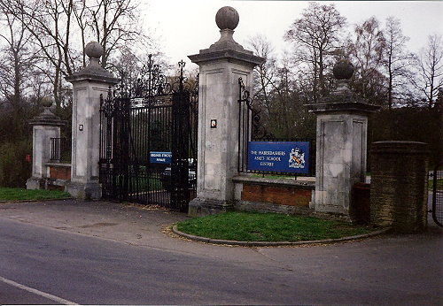
THE
SAINT: The Work of Art
(Peter Yates: Peter Yates 1963)
Juliette follows Prevost's taxi to the gates on Butterfly Lane in The
Saint's Volvo. Later that evening The Saint visits the house.
THE
SAINT: The Saint Plays
with Fire (Robert S. Baker: 1963)
Simon Templar is driving along a country road (Butterfly Lane)
in his
Volvo at night when he see the signs of a fire. He stops the car to
investigate and soon determines the source as the country house
‘Whiteways’ he drives in through the gates (Butterfly Lane
gates).
DANGER
MAN: Fish on a Hook
(Robert Day: March 1964)
The home of Abdul Kassim, from which Drake drives away with Mrs.
Kassim, Dr. Zorin and Kemal in a Mercedes.
DANGER
MAN: The Galloping
Major (Peter Maxwell: 1964)
John Drake visits Lassale’s house in the evening for a game of snooker.
THE
SAINT: Jeannine
(John Moxey: May 1964)
Fouquet and Peyrac rob Madam Chen of her pearls as they drive back to
Paris from the races (back projection of Aldenham Road).
DANGER
MAN: Such Men are
Dangerous (Don Chaffey Oct/Nov 1964)
John Drake (Patrick McGoohan) arrives at Linden
Manor by Taxi. After
meeting the Lodgekeeper (Patrick Connor), a
shooting party, and Diana
(Georgina Ward), he is driven up to the main house
with a group of
recruits. From a window he later sees The General (Jack
Gwillam)
talking to Diana, and he meets her again after picking up a parcel from
a butcher's van. After returning to the house in a Jaguar with Johnson,
he then tries to escape in a Land Rover pursued by Latour (Lee
Montague).
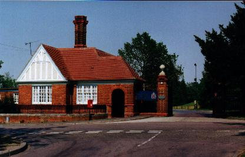
THE
AVENGERS: Too Many
Christmas Trees (Roy Baker: February 1965)
Steed and Mrs Peel drive through Storey's gateway in the Bentley.
(Spotted by Michael Richardson, 1989)
THE
AVENGERS: The
Cybernauts (Sidney Hayers: March 1965)
Steed (Patrick Macnee) is doing a crossword in a
vintage car when Mrs
Peel (Diana Rigg) arrives by Lotus.
THE
AVENGERS: The
Grave-Diggers (Quentin Lawrence: March 1965)
Johnson (Paul Massie) leads a gang of undertakers
to a hearse at the
rear of the 'Sir Horace Winslip Hospital for Retired or Ailing
Railwaymen'. Later Steed (Patrick Macnee) visits
the hospital.
THE
BARON: Diplomatic
Immunity (Leslie Norman: August 1965)
Cordelia and The Baron drive past the guarded gates of Comrade Sforza's
house (School gates on Butterfly Lane) and pull off
the road on
Butterfly Lane.
THE
SAINT: The Queen's
Ransom (Roy Baker: April 1966)
Mustafa is in hot pursuit of Simon and Queen Adana (Butterfly
Lane
gates in back projection).
THE
SAINT: The Counterfeit
Countess (Leslie Norman: Dec 1966/Jan 1967)
Simon Templar drives to the residence of the Countess de Bussey and
climbs the wall.
(this building has been demolished)
THE
AVENGERS: Never, Never
Say Die (Robert Day: February 1967)
Whittle (Christopher Benjamin) looks at his damaged
car and shortly
afterwards the ambulance leaves the casualty block. Fake ambulance
arrives through the gates of the Ministry of Technology Neoteric
Research Unit.
THE
AVENGERS: Return of
the Cybernauts (Robert Day: June 1967)
The Cybernaut (Terry Richards) pursues Neville (Charles
Tingwell) to
his Jaguar and rips the roof off to kidnap him.
THE
AVENGERS: Dead Man's
Treasure (Sidney Hayers: June 1967)
Alex (Edwin Richfield) and Carl (Neil
McCarthy) try to force Penny
(Valerie Van Ost) and Steed (Patrick
Macnee) off the road.
THE
AVENGERS: Have Guns -
Will Haggle (Ray Austin: October 1967)
Tara (Linda Thorson) evades Conrad (Jonathan
Burn) at the ballistics
establishment, leaving in her Lotus pursued by Conrad's Jaguar.
DEPARTMENT
S: The Bones of Byrom
Blain (Paul Dickson: 1968)
Byrom Blain's Rolls Royce arrives at the gates of Marling Dale and is
allowed through by the guards.
THE
AVENGERS: Split!
(Roy Baker: January 1968)
Steed (Patrick Macnee) visits Nullington Hospital
to see Dr.
Constantine. Lord Barnes visits Nullington Hospital by car, but does
not
go inside.
DEPARTMENT
S: The Double Death of
Charlie Crippen (John Gilling: Summer 1968)
Jason (Peter Wyngarde) and Sullivan (Joel
Fabiani) climb over the wall
into the house's grounds.
THE
SAINT: The Man Who
Gambled With Life (Freddie Francis: Summer 1968)
Simon's Volvo drives past the heavily guarded gates of Longman's
mansion. He pulls into the side of the road and breaks into the house
when it becomes dark
THE
AVENGERS: Legacy of
Death (Don Chaffey: July/August 1968)
The residence of the late Henley Farrer. Zoltan looks out of the window
of Henley Farrer’s home as he hears Sidney Street’s car arrive.
(Identified by the Lewy family, August 2009)
THE
AVENGERS: Killer
(Cliff Owen: September 1968)
Merridon (Grant Taylor) and Brinstead (William
Franklyn) attempt to
stop Trouncer escaping. The motor coach leaves from the REMAK building
and Lady Diana Forbes-Blakeney (Jennifer Croxton)
follows.
photo: Gordon Thomson
RANDALL
AND HOPKIRK [DECEASED]: All
Work and No Pay (Jeremy Summers: Early 1969)
Jeanie drives her mini through the gates of the Foster brothers’
mansion for a demonstration of their spiritualist powers (gates
on
Butterfly Lane).
THE
AVENGERS: Requiem
(Don Chaffey: January 1969)
Mother's men add decor to a gateway to mislead the villains.
DEPARTMENT
S: A Small War of
Nerves (Leslie Norman: Spring 1969)
Jason (Peter Wyngarde) climbs over the wall of
Wiltshire Park Health
Hydro and evades the guard dogs to rescue disgruntled germ warfare
expert Greg Halliday (Anthony Hopkins).
JASON
KING: The Constance
Missal (Jeremy Summers: 1971)
Whilst Claudia watches from their car, Elaine climbs the wall of a
house. She is able to steal the Efridge necklace whilst it's hypnotised
owner watches on. Elaine returns to the car with her haul and the two
women drive off.
THE
PROTECTORS: 2000 ft To Die (John Hough: 1972)
As the guards are distracted Harry Rule (Robert Vaughn)
parachutes into
the Kranstone Research Centre and breaks into the house. He later
leaves in a stolen Rolls Royce which crashes through the gates.
THE
PROFESSIONALS: Lawsons
Last Stand (Ian Sharp: 1981)
Brigadier Bill Tennant (Donald Pickering) meets Dr
Lowe (Stephen Greif)
to discuss Lawson’s condition. Lawson is at that very moment escaping
and it is only after a nurse is unable to unlock the door that Lawson’s
escape is noticed. Later Bodie (Lewis Collins) and
Ray Doyle (Martin
Shaw) arrive to investigate the case.
Films:
IT'S IN THE AIR (1935)
QUATERMASS II (1957)
BOTTOMS UP (1959)
VILLAGE OF THE DAMNED
(1960)
THE TRIALS OF OSCAR WILD
(1960)
THE INVASION QUARTET
(1961)
KILL OR CURE (1962)
THE NANNY (1965)
THEATRE OF DEATH
(1965)
FRANKENSTEIN MUST BE DESTROYED
(1969)
THE ABOMINABLE DR PHEBES
(1971)
Television:
UNCLE JACK & THE DARK SIDE OF
THE MOON
(1992)
FULL STRETCH: Deals on
Wheels (1993)
N33: Aldenham Road, Elstree
THE
AVENGERS: The Master
Minds (Peter Graham Scott: December 1964)
Steed and Mrs Peel depart for new adventures in the Bentley.
THE
AVENGERS: Dead Man's
Treasure (Sidney Hayers: June 1967)
Alex and Carl race along Aldenham road as they try to run Steed and
Penny off the road.
THE
AVENGERS: False Witness
(Charles Crichton: June 1968)
Steed (Patrick Macnee) gets off Mother's
double-decker bus and gets
into his Yellow Rolls which is parked on Aldenham Road. He drives off
to rescue Tara.
THE
AVENGERS: Requiem
(Don
Chaffey: January 1969)
Following Tara's clue about Steed having told her he lived near Henley,
Firth concentrates his search around this town on the Thames
(Aldenham reservoir).
THE
AVENGERS: Take-Over
(Robert Fuest: February 1969)
A Rolls Royce travels along a quiet country lane (south down
Aldenham
Road) with a man held prisoner in the back. The driver stalls
the car.
The captors, Grenville (Tom Adams) and Lomax (Keith
Buckley), pretend
to examine the engine while their captive escapes. The fugitive runs
across a field (Elstree Cricket Club) towards a
body of water (Aldenham
reservoir) but the villains stop him dead in his tracks with
a
cigarette lighter.
N34: Home Farm, Aldenham Road, Elstree
THE
HUMAN JUNGLE: Ring of
Hate (Charles Crichton: May/June 1964)
A Humber Hawk estate car arrives at the farm. Later, the vehicle is
parked in front of the farmhouse, when Leigh Garner
(Dudley Sutton) charges out in a rage and getting
into the car, he
drives it away at speed. Several days later, Leigh Garner trains by
skipping and is watched by Hogan (Barry Keegan) and
Bill Flack (Jimmy
Gardner).
Sat in the back of a Land Rover Hogan (Barry Keegan)
and Bill Flack
(Jimmy Gardner) watch as Leigh Garner (Dudley
Sutton) jogs along behind
the vehicle (Aldenham Road). Sometime later, Leigh
Garner is once again
in training following the Land Rover down a narrow country lane, while
Hogan and Bill Flack discuss a story in the newspaper about the
upcoming boxing match.
THE
AVENGERS: Dead Man's
Treasure (Sidney Hayers: June 1967)
Penny (Valerie Van Ost) and Steed (Patrick
Macnee) in their Bentley
cause Alex (Edwin Richfield) to shoot Carl (Neil
McCarthy) after which
their car smashes through the farm gate and into a tree.
(Spotted by Michael Richardson, 1989)
THE
AVENGERS: False Witness
(Charles Crichton: July 1968)
Steed (Patrick Macnee) takes Melville (Barry
Warren) to undergo a lie
detector test inside Mother's (Patrick Newell)
double decker bus HQ
conducted by Dr. Grant (Arthur Pentelow) and
observed by Rhonda (Rhonda
Parker). Later an analysis report on the milk arrives back at
Mother's
HQ. Lord Edgefield (William Job) arrives in his
Rolls at Dreemykreem
Dairies to pay off Sykes. Tara follows Lane (Rio Fanning)
to the dairy
in her Lotus Europa. Tara (Linda Thorson) returns
to the dairy in order
to destroy the treated milk. The bus sets off (from Home Farm
on to
Aldenham Road). Later Steed arrives in his yellow Rolls to
rescue Tara.
JOURNEY
TO THE UNKNOWN: Poor
Butterfly (Alan Gibson: October 1968)
Steve Miller (Chad Everett) stop arrives at the
home of Ben Loker
(Bernard Lee) and his wife (Susan Richards)
looking for petrol and a
few answers.
HERE
COME THE DOUBLE DECKERS!: Summer
Camp (Harry Booth: 1969)
The farmer (George Woodbridge) is startled to see a
haystack drive into
his farmyard
Television:
TIGHTROPE
(1972)
N35: Tykes Water Lake,
Bridge and approach road, Aldenham Park, Elstree
THE
FOX: Pilot Episode
(Peter Maxwell: 1958)
The postillion of Marie Antoinette's coach is shot by Charney and runs
out of control over the bridge.
H.
G. WELLS' INVISIBLE MAN: Bank
Raid (Ralph Smart: 1958)
A car pulls up by the lake where Sally (Deborah Watling)
is fishing
with her uncle. Williams (Brian Rawlinson) gets out
after talking to
Crowther and attempts to kidnap Sally.
THE
AVENGERS: Two's a Crowd
(Roy Baker: May 1965)
Ivenko (John Bluthal) heads to meet Steed (Patrick
Macnee) at the
bridge, but is shot by Psev's submarine. Later, Steed meets Mrs Peel
(Diana Rigg) whilst out riding.
(Spotted by Michael Richardson, 1989)
THE
AVENGERS: Silent Dust
(Roy Baker: June 1965)
Steed (Patrick Macnee) tells Mrs Peel (Diana
Rigg) about the lack of
martlets as they enjoy a punt.
(Spotted by Michael Richardson, 1989)
THE
AVENGERS: The Hour
That Never Was (Gerry O'Hara: July 1965)
Steed (Patrick Macnee) and Mrs Peel (Diana
Rigg) crash in the Bentley
near the bridge, which they then cross to reach RAF Hamelin. Later,
Steed recovers in his car alone and retraces his steps.
(Spotted by Michael Richardson, 1989)
THE
AVENGERS: Small Game
for Big Hunters (Gerry O'Hara: September 1965)
Kendrick (Peter Thomas) flees from tribal drumbeats
to a wire fence.
Steed and Mrs Peel depart for new adventures in a canoe.
(Spotted by Michael Richardson, 1989)
THE
AVENGERS: Honey for
the Prince (James Hill: February 1966)
Steed (Patrick Macnee) and Mrs Peel (Diana
Rigg) return across the
bridge from an early morning party.
(Spotted by Michael Richardson, 1989)
THE
SAINT: Flight Plan
(Roy Baker: September 1966)
Templar's Volvo drives across the bridge.
THE
AVENGERS: Never, Never
Say Die (Robert Day: February 1967)
Stone (Christopher Lee) encounters an old man (Arnold
Ridley) with a
radio controlled boat. Stone is drawn to the radio of a young man
(David Gregory), who is sleeping by his Triumph
roadster. Steed
(Patrick Macnee) drives along in his Land Rover
looking for the
mysterious stranger when he spots a cottage (studio set).
Doctor
Penrose (Jeremy Young) and a number of men from the
Neoterric Research
Unit search the woods for Stone. Also in the woods, a sergeant (John
Junkin) and private (Peter Dennis) are
dealt with by Stone. Mrs Peel
visits Aerial Cottage in her Lotus.
THE
AVENGERS: Epic
(James Hill: February 1967)
Steed (Patrick Macnee) and Mrs Peel (Diana
Rigg) wait five-tenths of a
mile along the road and are filmed by Kirby (Peter Wyngarde)
as a
cycling vicar.
(Spotted by Michael Richardson, 1989)
THE
AVENGERS: Return of
the Cybernauts (Robert Day: May 1967)
The Cybernaut (Terry Richards) carries the
unconscious Neville (Charles
Tingwell) towards Beresford's house.
(Spotted by Mike Richardson, December 2012)
THE
AVENGERS: You Have
Just Been Murdered (Robert Asher: July 1967)
Mrs Peel (Diana Rigg) sees Maxted's case dropped
from a bridge and is
then attacked by Nicholls (Frank Maher). Unwin (Barrie
Ingham) drops
his case over the bridge where Mrs Peel uses it to overpower Morgan
(Les Crawford), but then Unwin tells Steed (Patrick
Macnee) it is a
bomb. Morgan leads Mrs Peel towards a nearby caravan, but as they pass
a haystack Skelton (Simon Oates) jumps out and
tackles Mrs Peel. Steed
and Unwin are not far behind and it is not long before Unwin is also
captured by Skelton. Steed soon discovers Needle's hiding place and
Steed battles with Morgan. Needle attempts to flee in a Landrover with
the ransom money, but the case explodes blasting the Landrover to
pieces and Needle into a tree.
(Spotted by Michael Richardson, 1989)
THE
AVENGERS: The Positive
Negative Man (Robert Day: August 1967)
Steed (Patrick Macnee) interrupts the fishing of
Cynthia Wentworth-Howe
(Caroline Blakiston).
THE
CHAMPIONS: The
Survivors (Cyril Frankel: Early 1968)
Three frogmen led by Pieter (Stephen Yardley) are
watched diving by
Richter (Donald Houston) and Emil (Bernard
Kay) who later shoot up
their tent. Craig (Stuart Damon) and Richard (William
Gaunt) also come
under fire when they dive at the lake.
THE
CHAMPIONS: The Final
Countdown (John Gilling: Early 1968)
German frogmen search the lake bed for the missing bomb.
THE
AVENGERS: Split!
(Roy Baker: January 1968)
Tara King (Linda Thorson) waits in her AC Cobra for
Lord Barnes who is
arriving by Hughes 269B helicopter.
THE
AVENGERS: Look -
(Stop me if you've heard this one) But There Were
These Two Fellers...
(James Hill: March 1968)
Randolph Cleghorn (Bill Shine) meets a comical end
from Maxie Martin
(Jimmy Jewel) and Jennings (Julian Chagrin)
whilst duck shooting.
THE
AVENGERS: Season Seven
UK title sequence (Summer: 1968)
Tara (Linda Thorson) runs along the bridge and
Steed (Patrick Macnee)
battles with empty suits of armour.
THE
AVENGERS: All Done
with Mirrors (Ray Austin: May 1968)
Roger (John Bown), one of Mothers' men in an MGB
tails Arkin (Peter
Elliott) driving a MG 110 to a secluded wood south of The
Establishment. He reports to Mother by radio. Arkin appears to be
talking to someone, but he is unable to see anyone in the immediate
area. Later Watney (Dinsdale Landen) follows Doctor
Dr Seligman
(Anthony Dutton) to the same location. After
Seligman is shot Major
Sparshott (Peter Copley) appears nearby. At the end
of the adventure,
Steed (Patrick Macnee) invites Tara (Linda
Thorson) to share a meal
with him in a field. He cooks a steak using the heat from the engine of
his Yellow Rolls Royce Silver Ghost.
THE
AVENGERS: Super Secret
Cypher Snatch (John Hough: June 1968)
Mother (Patrick Newell) sets up his mobile HQ in a
field in his Bentley
with the help of Rhonda (Rhonda Parker). He briefs
Tara (Linda
Thorson), sitting on her AC Frua and Steed (Patrick
Macnee)with his
Yellow Rolls Royce Silver Ghost.
THE
AVENGERS: Game
(Robert Fuest: June 1968)
Steed (Patrick Macnee) and Tara (Linda
Thorson) go to visit Brigadier
Wishforth-Browne (Anthony Newlands) at an army
training ground where
troops are exercising. Later they go back to a meeting with the
Brigadier in Steed's yellow Rolls Royce Silver Ghost and are nearly run
down by the corpse of the Brigadier which has been put in an unmanned
jeep.
THE
AVENGERS: They Keep
Killing Steed (Robert Fuest: August 1968)
Tara (Linda Thorson) gets Steed (Patrick
Macnee) to prove his identity,
and as she gets her car, Baron Von Curt (Ian Ogilvy)
despatches another
fake Steed.
(Spotted by Michael Richardson, 1989)
THE
SAINT: Little Girl Lost
(Roy Baker: Aug/Sep 1966)
Simon Templar (Roger Moore) is fishing by an Irish
lake when a young
woman (June Ritchi) crashes her Mini nearby. She is
being chased by two
thugs (Shay Gorman and Maurice Good) in a WV
Beetle. They leave their
car and attack Simon who fights them off and leaves with the girl in
his Volvo.
THE
AVENGERS: Killer
(Cliff Owen: September 1968)
Lawson's body is dropped by a helicopter.
(Identified by Mike Richardson, August 2012)
THE
AVENGERS: The
Interrogators (Charles Crichton: October 1968)
Paid informant, Fillington, is practicing football in a field when Sgt
Blackie (Glynn Edwards) creeps up and shoots him
from a distance.
RANDALL
AND HOPKIRK [DECEASED]: The
Smile Behind the Veil (Jeremy Summers: Autumn
1968)
Hooper (Peter Jesson) and Grant (Robin
Hawdon) arrive with Jeff and his
car and throw him over the bridge into the water as Marty (Kenneth
Cope) watches.
(Spotted by Michael Richardson, 1989)
THE
AVENGERS: Thingumajig
(Leslie Norman: January 1969)
Pike (Russell Walters) finds the fish in the river
all dead, prompting
Steed (Patrick Macnee) and Inge (Dora
Reisser) to have the lake
dredged. Kruger (Iain Cuthbertson) enters his
caravan on the roadside.
Later, at dusk, Tara races in her Lotus Europa to warn Steed about the
deadly boxes.
(Spotted by Michael Richardson, 1989)
THE
AVENGERS: Take-Over
(Robert Fuest: February 1969)
Fenton Grenville (Tom Adams), John Steed (Patrick
Macnee) and Bill
Basset (Michael Gwynn) arrive for their shoot in a
Land Rover. Gilbert
Sexton (Garfield Morgan) and Ernest Lomax (Keith
Buckley) get out of
the back of the Land Rover with their guns to act as beaters. An
attempt is made to kill Steed, but he is able to trick his would-be
executioners into thinking he is dead.
(Spotted by Michael Richardson, September 2012)
HERE
COME THE DOUBLE DECKERS!: Summer
Camp (Harry Booth: 1969)
Scooper (Peter Firth), Spring (Brinsley
Forde), Billie (Gillian
Bailey), Brains (Michael Audreson),
Doughnut (Douglas Simmonds), Sticks
(Bruce Clark), Tiger (Debbie Russ)
and Albert (Melvyn Hayes) arrive in
the country for a few days holiday and run into trouble with a couple
of other holiday makers (Betty Marsden, Hugh Paddick).
Fortunately, the
farmer who owns the site (George Woodbridge) is on
their side.
JASON
KING: An Author in
Search of Two Characters (Cyril Frankel: 1970)
As Jason King (Peter Wyngarde) walks by the lake,
Reynolds (John
Sullivan) appears from the bridge, and runs towards him.
Suddenly, a
spaceman appears and shoots him. Jason is then floored by a grizzly
bear. After the lake is searched. Inspector Hughes (Ivor Dean)
arrives
to meet D.S. Watkins (Brian Grellis) and see
Reynolds' body dragged
from the lake.
THE
ADVENTURER: Return to
Sender (Cyril Frankel: 1972)
Gavin (Garrick Hagon) and Michele (Pamela
Salem) are chased in their
car by Fleming (Patrick Mower) and Gorman (Donald
Burton) over the
bridge.
THE
PROFESSIONALS: Lawsons
Last Stand (Ian Sharp: 1981)
Lieutenant Colonel Peter Lawson (Michael Culver),
and Tug Willis (John
Hallam) bury Les before starting on the second phase of their
plan.
Films:
633 SQUADRON (1964)
NIGHT MUST FALL (1964)
THEATRE OF DEATH
(1965)
TASTE THE BLOOD OF DRACULA
(1969)
MOSQUITO SQADRON
(1969)
THE ABOMINABLE DR PHEBES
(1971)
DEMONS OF THE MIND
(1971)
DRACULA A.D. 1972
(1972)
FEAR IN THE NIGHT
(1972)
VOICES (1973)
THE MONSTER CLUB
(1980)
Television:
THE NEW ADVENTURES OF CHARLIE CHAN:
The Final Curtain (1957)
THE NEW ADVENTURES OF CHARLIE CHAN:
No Holiday for Murder
(1957)
DIAL 999: Special Branch (1958)
ESPIONAGE: A Covenant with Death (1963)
PATHFINDERS: Fly There Walk Back (1972)
SPYDER'S WEB: The Executioners (1972)
TIGHTROPE: (1972)
WINGS: Mary Had a
Little Lamb promotional film (1972)
Babycham commercial
(1991)
THE MRS BRADLEY MYSTERIES:
Speedy Death (1998)
N36: Borehamwood Public Library, Elstree Way, Borehamwood (demolished)
THE
CHAMPIONS: The Search
(Leslie Norman: April 1967)
Whilst waiting in a queue at the library Sharron (Alexandra
Bastedo)
reads the whole of War and Peace and hands it back to the librarian
when she reaches the end of the line instead of booking it out.
HERE
COME THE DOUBLE DECKERS!: Tiger
Takes Off (Harry Booth: 1969)
Brain's pigeon summons Scooper (Peter Firth),
Sticks (Bruce Clark) and
Tiger (Debbie Russ) to a meeting.
N37: St.Teresa's RC Primary School, Brook Road, Borehamwood
HERE
COME THE DOUBLE DECKERS!: A
Hit for a Miss (Harry Booth: 1969)
Tiger (Debbie Russ) and Billie (Gillian
Bailey) wait impatiently for
Spring (Brinsley Forde), Doughnut (Douglas
Simmonds), Brains (Michael
Audreson), Sticks (Bruce Clark) and
Scooper (Peter Firth) at the school
gates. When the boys appear they ignore the girls as they are with Miss
Petit (Georgina Simpson), their new teacher.
Films:
THE MONSTER CLUB
(1980)
N38: Rowley Farm, Rowley Lane, Well End

photo: Geoff Dodd
THE
AVENGERS: Silent Dust
(Roy Baker: June 1965)
Juggins’ Farm - After meeting Mrs Peel Omrod (William
Franklyn) rides
to the farm to talk to Juggins. During the hunt Omrod and Juggins (Jack
Watson) set off from the farm on horseback after Mrs Peel.
(Identified by Geoff Dodd, August 2008)
RANDALL
AND HOPKIRK [DECEASED]: The
Smile Behind the Veil (Jeremy Summers: Autumn
1968)
Jeff Randall (Mike Pratt) arrives at Lynstead Acres
on the Elmstead
Road looking for Dyson (John Bott). Seaton (Alex
Scott) and Grant
(Robin Hawdon) follow Jeff in to the farm and Grant
shoots Dyson by
mistake. Some nights later Seaton and Hooper (Peter Jesson)
drive
Donald Seaton (Gary Watson) and Jeff back to the
farm and lock them in
to an outhouse. Grant and Hooper return to deal with their two
prisoners but a fight breaks out and Seaton manages to escape. Grant
and Hooper then throw Jeff into an old wishing well. The next morning
Marty (Kenneth Cope) manages to attract the
attention of two hikers
(Michael Radford and Clare Jenkins) and leads them
towards the well.
Films:
THE OLD CURIOSITY SHOP
(1934)
N39: Canterbury House, Borehamwood
DEPARTMENT
S: The Shift That
Never Was (Sidney Hayers: May 1967)
A woman living in the flats overlooking the chemical factory witnesses
an accident with one of the tankers.
UFO: Confetti Check A-O.K.
(David Lane: November 1969)
A private detective follows Straker (Ed Bishop) and
Nina Barry (Delorez
Mantez) to her apartment and photographs them together.
N40: Running Track, Metropolitan. Police Cadet Playing Fields, Stirling Corner, Borehamwood (redeveloped)
DEPARTMENT
S: The Last Train to
Redbridge (John Gilling: 1968)
Sir Curtis and Sullivan discuss the case as they jog round a track.
N41: McDonalds, Shenley Road, Borehamwood
THE
SAINT: The Man Who was
Lucky (John Gilling: 1962)
When Marty's Morris arrives Eddie and Lucky run out and shoot him. Cora
and the Saint watch as the gunmen drive away.
THE
SAINT: The Well
Meaning Mayor (Jeremy Summers: 1963)
Hackett (Norman Bird) leaves Teinplar's hotel and
walks to his car.
N42: Cowley Hill Road, Hatforde Road, Borehamwood
H.
G. WELLS' INVISIBLE MAN: Bank
Raid (Ralph Smart: 1958)
The crew of a Wolesley police car see Sally (Deborah Watling)
waving
from an apparently driverless car and set off in pursuit.
N43: ShenleyHospital Gates, Radlett Lane, Shenley
Photo: Geoff Dodd
DANGER
MAN: The Sanctuary
(Charles Frend: 1959)
Drake is driven, in the governor’s Humber, through the gates of
Hartington Open Prison to meet Michael Liamond.
(Identified by Stephen Winterbottom)
N44: Hartforde Road, Borehamwood
THE
AVENGERS: False Witness
(Charles Crichton: June 1968)
Steed (Patrick Macnee) arrives at the rendezvous in
his Yellow Rolls
Royce and uses a portable bus stop to catch a double-decker bus being
used by Mother (Patrick Newell) as his mobile
headquarters (opposite
Braken Close). Steed climbs the stairs and asks Rhonda (Rhonda
Parker)
for a drink from the bar before talking to Mother (the bus
then drives
up and down Hartforde Road) . Melville (Barry
Warren) gets on to the
bus (Cowley Hill/Hartforde Road junction) and he is
watched
suspiciously by the ticket collector as he starts to climb the stairs
to see Mother. Later Steed (Patrick Macnee) gets
off the bus as
Melville (Barry Warren) tries to get on. Steed
holds back Melville with
his umbrella.
(Identified by Sam Denham)
N45: Chester Road/ Balmoral Drive, Borehamwood
THE
BARON: Samurai West
(John Moxey: July 1965)
On his way to save Sterling at Reflexo Glass & Mirrors Ltd.,
Mannering drives his Jensen along this road.
THE
BARON: There's Someone
Close Behind You (Roy Baker: December 1965)
Greg Wilde leaves court in a police car and is followed by Sheldon and
Alan Jordan in their car. They radio their location to other members of
the gang (back projection). Later Wilde escapes
from the police in a
yellow van, but as he drives along Chester Road he does not realise
that Mannering has managed to stow away in the back.
THE
DEPARTMENT S: The Man
In The Elegant Room (Cyril Frankel: Spring 1968)
An estate agent takes his client to see a warehouse property in
Islington (reversed back projection of Chester Road, only one
of the
industrial buildings formerly on Chester Road currently survives).
RANDALL
AND HOPKIRK [DECEASED]: Whoever
Heard of a Ghost Dying? (Ray Austin:
Late 1968)
After leaving the doctor's office, Jeff drives Marty back to their
office and discuss Inspector Large's threat (back projection
of Chester
Road, only one of the industrial buildings formerly on Chester Road
curently survives).
THE
PROTECTORS: King Con
(Jeremy Summers: 1972)
Followed by Cribbs, Harry Rule arrives with a suitcase full of money to
pay off his creditors.
(Identified by Pat Walsh, October 2004)
THE
PROTECTORS: Thinkback
(Cyril Frankel: 1972)
Harry and The Contessa arrive at the film studio, where Frank Dilling
is hiding, in a ambulance. Inspector Wilson’s car is already there.
(Identified by Pat Walsh, October 2004)
N46: Howard Drive, Borehamwood
GIDEON’S
WAY: To Catch A Tiger
(Les Norman, April 1965)
Nurse Smith (Olwen Brook) is accidentally run over
by a Jaguar whilst
shopping.
THE
PROTECTORS: Thinkback
(Cyril Frankel: 1972)
After commandeering an ambulance, Harry and The Contessa race around a
corner (from Balmoral Drive into Howard Drive) and
past some shops on
their way to save Frank Dilling.
(Identified by Pat Walsh, October 2004)
N47: Old Lodge Motors, Theobald Street, Borehamwood
THE
SAINT: When Spring is
Sprung (Jim O'Connolly: March 1967)
Simon buys a van from a garage (Old Lodge Motors).
N48: Lyndhurst, Green Street, Shenley
Photo: Alan Field
THE
AVENGERS: Legacy of
Death (Don Chaffey: July 1968)
After Tara's Lotus loses all the villains' cars Steed directs her to
one of his childhood haunts. They drive in through the gates.
(Spotted by Alan Field)
THE
AVENGERS: Requiem
(Don Chaffey: January 1969)
Tara King (Linda Thorson) overheard wakes from a
drug induced sleep to
overhear a plot to kill Mother. Tara runs from the house to her Yellow
Rolls Royce, but she collapses in the car before she can drive off.
This is also the building that poses as the hospital where Tara is
later held.
THE
BARON: Samurai West
(John Moxey: July 1965)
Raymond Huntley takes Mannering (SteveForest) to
the nursing home to
meet his brother Tom.
JOURNEY
INTO THE UNKNOWN: Jane
Brown's Body (Alan Gibson: 1968)
A young girl (Stefanie Powers) is taken by
ambulance to the home of
Doctor Ian Denholt. Once the girl is revived Paul Amory (David
Buck) is
invited to the house to teach the girl, newly christened Jane Brown.
Later, after being dismissed, Paul Amory returns to confront Jane Brown
in the garden.
N49: New Road, Shenley
DANGER
MAN: Whatever Happened
To George Foster? (Don Chaffey: November 1964)
John Drake (Patrick McGoohan) arrives sat the home
of Charlie Hewitt in
a stolen police car. He enters, but a familiar stranger (Colin
Douglas)
arrives almost immediately and telephones the police from a call box.
The stranger goes to Hewitt’s house but is attacked by Drake who drives
away.
(Identified by Sam Denham, September 2004)
N50: Hillside Avenue, Borehamwood
Photos: Alan Field
GIDEON’S
WAY: The Reluctant
Witness (Jeremy Summers, April 1965)
Rachel’s stays with Mrs. Moss. Larry Larkin (Dervis Ward)
attempts to
run Rachel down as she leaves the house (Hillside Avenue and
Bullhead
Road).
(Identified by Alan Field, December 2007)
Films:
CONFESSIONS OF A DRIVING INSTRUCTOR
(1976)
N51: Green Street (B5378), Borehamwood
Photos: Alan Field and Photo: Geoff Dodd
THE
AVENGERS: False Witness
(Charles Crichton: June 1968)
Steed Takes a ride in Mother’s mobile headquarters (camera
located near
the junction with Stapleton Road looking north).
(Confirmed by Geoff Dodd, May 2008)
THE
AVENGERS: Legacy of
Death (Don Chaffey: July 1968)
After Tara's Lotus loses all the villains' cars Steed directs her to
one of his childhood haunts .
(Spotted by Alan Field)
N52: Crossoaks Farm, Crossoaks Lane, Ridge
THE
SAINT: Jeannine
(John Moxey: May 1964)
Fouquet (John Dearth) and Peyrac (Peter
Diamond) arrive at the farm
with Madam Chen’s necklace. They are about to exchange cars when Simon
Templar (Roger Moore) arrives in his Volvo. There
is a fight and Simone
overpowers the two villains and retrieves the pearls. Sergeant Luduc
(Robert Cawdron) arrives in a police car with Madam
Chen (Jacqui Chan)
and Jeannine Roger (Sylvia Simms). Fouquet and
Peyrac are taken into
custardy and the necklace is retrieved from Simon.
THE
AVENGERS: Dead Man's
Treasure (Sidney Hayers: June 1967)
Steed’s windscreen is shattered by a bullet and is forced to bring his
Bentley to a sudden halt. Bates (Ivor Dean),
watches from his Landrover
in a nearby field as Steed and Penny set off again in the Bentley.
THE
AVENGERS: Super Secret
Cypher Snatch (James Hill: June 1968)
After checking that the gates to Cypher Headquarters are all clear The
Classy Glass Cleaning trucks form a convoy and set off. A day or so
later Vickers (Donald Gee) passes on the message to
Maskin (Simon Oats)
that the telephone lines to Cypher Headquarters have been blocked.
Maskin orders Harper, Lang, Davis (Anthony Blackshaw)
and Warren into
action. The convoy sets off once more.
N53: Butterfly Lane, Elstree
GIDEON’S
WAY: The Rhyme and the
Reason (John Gilling, August 1964)
Chief Inspector Keen and Mary Henderson just happen to be in the area
driving.
(Identified by Alan Field, May 2009)
GIDEON’S
WAY: The Great Plane
Robbery (Leslie Norman: March/April 1965)
The decoy van driven by Kautsky is pulled over by two police officers
in a patrol car.
(Identified by Alan Field, March 2010)
THE SAINT: The
Smart Detective (John Moxey:
February 1965)
Swann and Miller follow Templar’s Volvo all the way to the yacht club in
Maidenhead (Butterfly Lane approaching Slades Farm.
(Identified by Geoff Dodd, November 2023)
THE
SAINT: Queen's Ransom
(Roy Baker: April 1966)
Travelling in Hortense's, Rolls Royce, Simon spots that they are being
pursued by one of the assassins, Mustafa (back projection of
Butterfly
Lane seen behind Mustafa).
N54: Links Drive, Elstree
THE
CHAMPIONS: The Gilded
Cage (Cyril Frankel: September 1967)
Craig is driving in his Mercedes as he realises that Richard is being
kidnapped from his flat.
(Identified by Geoff Dodd, October 2010)
N55: The Wagon and Horses, Watling Street, Elstree
THE
HUMAN JUNGLE: The Man
Who Fell Apart (Roy Baker: ???)
Mrs Harris drives in her Hillman Imp to interview the Matron of Rest
Harrow School for Handicapped Children.
THE
HUMAN
JUNGLE: Dual
Control (Roy Baker, ???)
Road to at Rest Harrow School for Handicapped Children - Jane Harris
drives Jane Falcon back to work at Rest Harrow in her Hillman Imp
(Watling Street, just before The Wagon and Horses).
(Identified by Geoff Dodd, July 2023)
N56: Cowley Hill, Borehamwood
THE
AVENGERS: Epic
(James Hill: February 1967)
Mrs. Peel is tricked into using a taxi driven by a disguised Stewart
Kirby's. Mrs Peel soon realises that they are going the wrong way, but
when she protests she is rendered unconscious by gas fed into her
sealed compartment (along Shenley Road to Cowley Hill past
the
Hertswood School a.k.a. Nicholas Hawksmoor Upper School, then taxi is
seen turning into Gateshead Road).
(Identified Geoff Dodd, May, 2011)
THE
AVENGERS: False Witness
(Charles Crichton: June 1968)
Steed (Patrick Macnee) is reading the report on the
top deck of
Mother's (Patrick Newell) mobile headquarters,
Mother and Rhonda
(Rhonda Parker) watch on. As Steed is about to leave
the bus Mother
warns him that "there is something very odd about this case" (the
bus
slows to a stop at the junction with Hartforde Road).
N57: Elstree Way, Borehamwood
THE
PRISONER: Many Happy
Returns (Patrick McGoohan: March 1967)
After leaving Mrs Butterworth at his old London house, the civil
servant (Patrick McGoohan) continues his journey in
the Lotus (just
opposite the Maxwell Road junction, totally redeveloped).
UFO: Confetti Check A-O.K.
(David Lane: November 1969)
A private detective follows Straker and
Nina Barry as they drive to her apartment (back projection).
N58: Warwick Road, Borehamwood
THE
AVENGERS: Get-Away!
(Don Sharp: February 1968)
Steed drives to the Magnus Importing Company Ltd. in his yellow Rolls
Royce and enters the building (buildings on both sides of the
road have
been redeveloped).
(Spotted by Geoff Dodd, February 2012)
N59: Ewhurst, 37 Furzehill
Road, Borehamwood (demolished)
(Idenified by Alan Hayes, March 2012)
RANDALL
AND HOPKIRK [DECEASED]: But
What a Sweet Little Room (Roy Ward Baker: Summer
1968)
Arthur de Crecy (Michael Goodliffe) arrives with
Anne Fenwick (Frances
Bennett) at his 'cottage in the country' in his Peugeot. They
leave the
car and enter the house. Later Arthur is forced to drive Jeff Randall
to the house.
THE
BARON: Portrait of
Louisa (John Moxey: September 1965)
Louisa's Home where she waits for a call from the blackmailer. After
the call she races off in her Volvo P800. Later Mannering arrives back
at the house in his Jensen CV-8 Mk II to find David tied up and gagged.
THE
CHAMPIONS: The Final
Countdown (John Gilling: Early 1968)
Marshall Von Splitz arrives in a chauffeur driven car at a country
house
near Hamburg after years of imprisonment in Russia.
GIDEON’S
WAY: Boy With Gun
(Jeremy Summers: May 1965)
Chris Kirk (Howard Knight) leaves his house with
his father's gun.
Films:
NIGHTMARE AT ELM MANOR
(1963)
VISIT FROM VENUS
(1964)
N60: Campions House, Green
Street (demolished)
THE
AVENGERS: What the
Butler Saw (Bill Bain: December 1965)
Mrs Peel takes Steed to the headquarters of the Butlers and Gentleman’s
Gentleman Association.
(Identified by Stephen Winterbottom, May 2015)
N61: Hollywood Court,
Deacons Hill Road, Elstree
THE
SAINT: The Fellow
Traveller (Peter Yates: January 1963)
Simon drives his Volvo to the Matsons’ house to talk to Mrs Maston
about her husband’s death.
DANGER
MAN: The Battle of The
Cameras (Don Chaffey: 1964)
One of Kent’s men takes photographs of Drake from a building
overlooking his hotel.
Films:
DIGBY, THE BIGGEST DOG IN THE WORLD
(1983)
N62: Sellotape Factory,
Elstree Way (demolished)

DEPARTMENT
S: The Shift That
Never Was (Sidney Hayers: May 1967)
Bellman-Parsons Chemical Company, Stepney, England (houses
on
Newark Green visible).
(Identified by Stephen Blanchard, May 2022)
Television:
THE PROFESSIONALS: It's
Only a Beautiful Picture (1980)
N63: Borehamwood to St
Albans Railway, east of Kendall Hall Farm
DIAL 999: The Great Gold Robbery (Terence
Fisher: ???)
???
(Identified by Alan Field, April 2023)
DIAL 999: Night Mail (Bernard
Knowles: ???)
???
(Identified by Alan Field, April 2023)